SVGCraft is laid out like Photoshop: menus along the top, the tool's options under
them, tools down the left, panels down the right, and your drawings in tabs in the
middle. It edits on tablets and larger screens; a phone gets a preview to look at
drawings.
On a phone
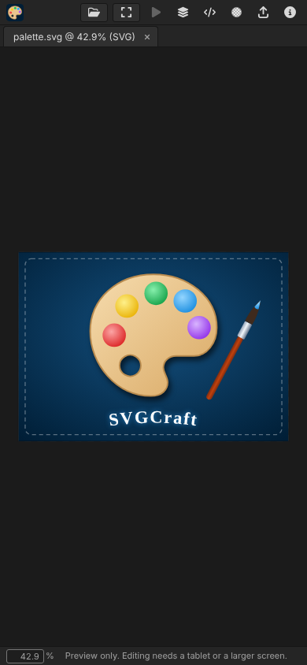
Look at, check and share SVGs on your phone. A phone gets a preview, not the editor,
so nothing you do there changes a drawing.
Tap Open (the folder) to open an SVG. Each opens in a tab of its
own; tap a tab to switch, or swipe along the tab bar for the next or previous
drawing (while all the tabs fit).
Drag to pan and pinch to zoom. Tap Fit (the four corners) to fit
the drawing to the screen.
Double-tap the canvas to zoom in on that spot (to 100%, or twice the fit for small
drawings), and double-tap again to fit.
The phone toolbar
Play (▶): plays the drawing's animations. ■, or a tap on the
button, stops them. It's greyed out when nothing is animated.
Layers: the layer list, to show and hide layers while you look (see
below).
Text view (</>): the SVG source full-screen,
syntax-coloured, to read (long lines wrapped), search and Copy (or
download). The same button, now a picture, goes back to the drawing.
Background: the artwork on the checkerboard, white or black. Each
tap moves to the next, and the button shows which it's on: a checkered circle, white
ringed in black, or black ringed in white. It's remembered.
Share: the phone's share sheet, with the SVG and a PNG of it. Where
the browser can't share files, the SVG is downloaded instead.
Info (ⓘ): the drawing's details (file, size, dimensions, layers,
animations, fonts) and its metadata from File Info (title, author, description,
keywords, date, copyright, licence and source, linked), read-only.
Help opens this guide, and About SVGCraft is at
the bottom.
Showing and hiding layers
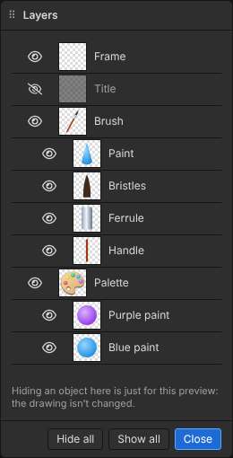
Tap Layers, then a layer's eye to hide or show it. Each layer has a
preview, always on the checkerboard as in the Layers panel.
Hide all and Show all do every layer. Show all
includes layers the file itself hides.
Layers inside a hidden group are dimmed: they can't show until the group does.
Only the preview changes. Nothing is saved, and switching tab or moving to a bigger
screen shows the drawing as it is again.
Good to know
A phone is a screen narrower than 768 px, or a phone held sideways.
The editing tools, menus and panels are hidden there, and so is Undo.
On a tablet
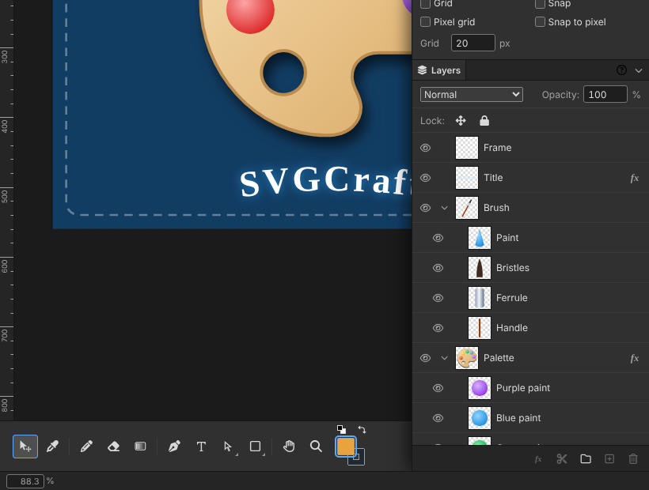
Edit on a tablet as on a computer. In landscape the layout is the same as on a
computer; in portrait it makes room for the canvas.
The toolbar moves to the bottom of the screen.
Tap the sliders button (top right) to slide the panels in from the right, and again
to put them away.
Good to know
This layout is for any window narrower than 1024 px, such as a tablet in portrait.
The theme button and the Export label are hidden there to save room.
Offline and as an app
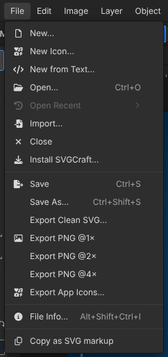
Use SVGCraft without a connection, or in a window of its own like any other app.
Open SVGCraft from the web once. From then on it works offline too.
To install it: in Chrome and Edge, click the install icon in the address bar, or
choose File → Install SVGCraft…. On an iPhone or iPad, tap
Share → Add to Home Screen.
Open it from your apps. It opens in a window of its own.
Updates
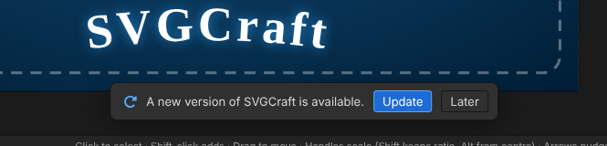
SVGCraft looks for a newer version by itself whenever the internet is there: when it
starts, when it comes back online, when you come back to its window, and every hour
while it's open.
When there's a newer version, a bar at the bottom of the window says so.
Click Update to reload SVGCraft with the new version. Your open
drawings, their tabs and their * marks are kept.
Or click Later to carry on. It isn't offered again by itself until
there's a newer version still; Help → Check for Updates… shows it
again.
Help → Check for Updates… looks at once and says what it found: up to
date (with the version), a new version (the bar), or no connection.
Good to know
On desktop Chrome and Edge, the installed app can be chosen to open
.svg files.
Install SVGCraft… only shows in the File menu when the browser
offers to install it.
Offline use works through a service worker, which keeps SVGCraft's files. Opened
straight from disk (file://), none of this applies, and there are no
updates.
The version is a short code made from SVGCraft's files
(src/version.js): any change to the app gives a new one. Online, a page
you open always loads the newest files, so the bar matters for a window left open,
or one started while offline.
The editor window
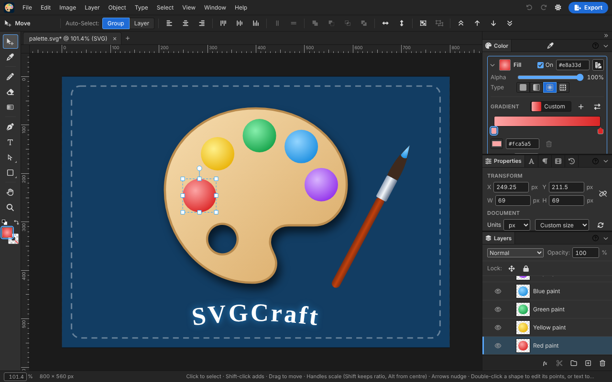
Find your way round the editor. From top to bottom:
Menu bar: File, Edit, Image, Layer, Object, Type, Select, View,
Window and Help (see The menu bar).
Options bar: the settings for the current tool (see
The options bar).
Status bar, along the bottom: an editable zoom field, the document
size, and hints for the current tool.
The menu bar
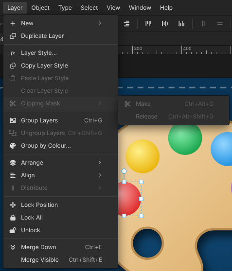
Find every command, in Photoshop's order.
Click a menu to open it, then hover to switch between menus. The arrow keys move
around too.
An item that can't run on the current selection is greyed out. Its tooltip still
shows, and its shortcut does nothing until it can run.
What needs what
Crop to Selection needs a selection.
A Clipping Mask, Combine Shapes or
Text on Path needs two layers.
Distribute needs three.
Good to know
Layer holds what works on whole layers: New, Duplicate, Layer
Style, Clipping Mask, Group, Arrange, Align, Lock and Merge.
Object holds symbols and what works on shapes: Path, Combine Shapes
and Flip.
Right-click menus
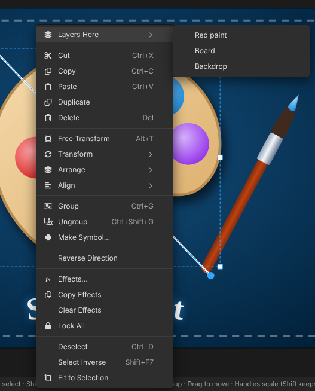
Reach what the selection can do without going to the menu bar, as in Photoshop.
Right-click a layer on the canvas: it's selected (unless it's
already in the selection) and the menu lists what the selection can do: Cut, Copy,
Duplicate, Free Transform, Transform, Arrange, Align, Group, Clipping Mask, Combine
Shapes, symbols, Layer Style and Lock, then Play Animations, Deselect, Select
Inverse and Crop to Selection.
Layers Here (at the top, when more than one layer is under the
pointer) lists them, top first, so you can pick one that's covered by others. The
ticked one is selected.
Right-click empty canvas with nothing selected: Paste, Select All,
Crop to Drawing, Play Animations and the zoom commands.
Play Animations (when the drawing has any) plays them on the
canvas, as ▶ Play does; while they play, right-click →
Stop Animations. A right-click doesn't stop them, as a click does.
During Free Transform: Scale, Rotate, Skew, the turns and flips,
and Commit or Cancel Transform.
While editing text: the browser's own menu, for cutting, copying
and pasting the text.
The menu only lists what would do something now, rather than greying out the rest,
to keep it short: Ungroup appears for a group, Create Outlines for text, Image Trace
for an image, Distribute for three layers or more; Arrange offers only the ways the
layer can move (no Bring Forward on the top layer); Copy Layer Style needs a style;
Select Inverse needs layers left unselected; 100% shows when you're not at 100%.
Paste is always there: what's on the clipboard can't be known until the browser is
asked to read it.
Each item is the menu bar's own, with its shortcut, so the menu teaches the keys.
Arrow keys move through it, → opens a submenu, Enter runs, Esc closes.
The options bar
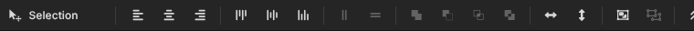
Change how the current tool works. The bar shows the settings for the tool you have:
stroke width and smoothing for the pencil, mode and size for the eraser, or the point
commands for Edit Points.
Type a value, or drag a field's label sideways to scrub it. Shift scrubs 10× faster.
When the window is too narrow for all of a tool's settings, a › at
the bar's end (and ‹ once you've scrolled) shows there's more:
click it, or scroll the bar with the mouse wheel.
Auto-Select (Move tool)
Group: a click on the canvas picks the whole top-level item.
Layer: a click picks the exact shape under the cursor, even deep
inside groups.
The toolbar
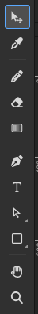
Pick a tool, and the colours it paints with.
Click a tool to use it.
A small corner mark means more tools share its button. Hold the button down,
right-click it, Alt-click it or click the mark to pick another from its flyout.
Click the fill or stroke chip (at the bottom) to make it the active paint. Click it
again to pick a colour.
Above the chips, as in Photoshop: the little black-and-white squares set the default
colours (D: black fill, white stroke), and the curved arrow swaps fill and stroke
(X).
Pointers
The pointer shows what a click will do, as in Photoshop:
the Move tool's arrow and cross;
Edit Points' white arrow;
a cross or lasso for picking points, with + while Shift adds and − while Alt takes
away;
the pen's nib, with * to start a path and o over its first point to close it;
the pencil, the eyedropper and the type I-beam;
the curved arrow on the rotate handle.
Docked panels
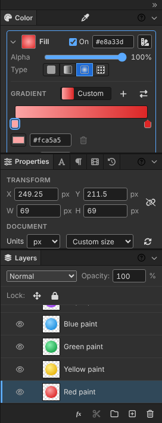
Keep the panels you use open beside the canvas, sized and folded the way you like.
Click a tab's icon to open it. The open tab also shows its name, and hovering any
tab names it.
Drag the divider under a group to resize it. Double-click the divider for the
group's natural height, or focus it and use the arrow keys.
Double-click a group's tab bar, or click the chevron at its end, to fold it to just
its tabs. Layers then gets the room. Click a tab to open it again.
Click » above the panels to shrink the column to a strip of icons,
leaving more room for the canvas. Click « to bring the panels back.
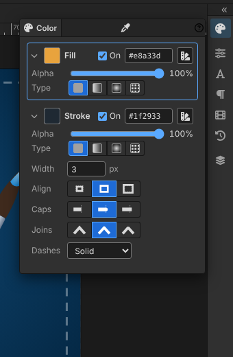
With the panels as icons, click an icon to pop its panel out beside the strip. A
click elsewhere, or Esc, puts it away.
The panels
Color: the fill and stroke, with the stroke's width, alignment,
caps, joins and dashes.
Properties, Character, Paragraph,
Animation and History. Properties has the
selection's Transform (X, Y, W and H, typed in the document's
units, with a link to keep the proportions), the shape's settings, the document
size, and the grid and snap.
Selecting text shows the Character tab; selecting something else afterwards goes
back to the tab you had.
Swatches, gradients, patterns and symbols are made and managed in the
Libraries window (Window → Libraries).
Good to know
Each group keeps its height whatever its tab shows, as in Photoshop. Longer content
scrolls inside it, so selecting something never shuffles the panels below.
Layers takes the rest of the height and always keeps room.
Heights and folded groups are remembered for your next visit.
Window → Reset Workspace puts them back.
Window menu
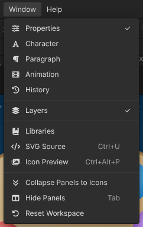
Open any panel by name, or put the workspace back as it was.
Choose a panel to open it on its tab. This brings the panels back if Tab hid them,
or pops it out of the icon strip.
Choose a ticked panel to fold it away. A tick means it's showing.
SVG Source (Ctrl+U) and Icon Preview (Ctrl+Alt+P):
open or close them (see Split view).
Collapse Panels to Icons: the icon strip.
Hide Panels (Tab): hides the panels, and Tab brings them back.
Reset Workspace: every panel open on its first tab, the icon strip
and hiding undone, SVG Source, Icon Preview and Libraries docked at the standard
widths, and dialogs back where they first open.
Split view
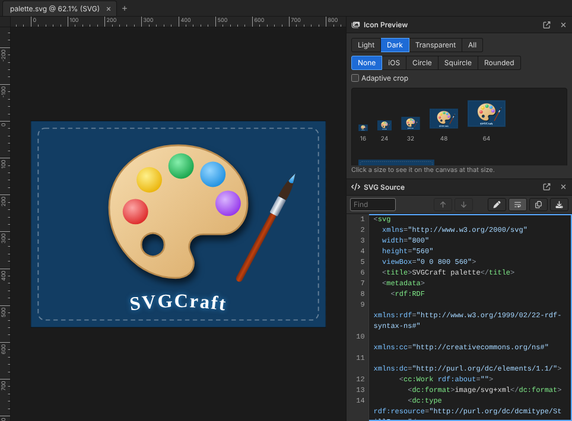
Watch the SVG source or the Icon Preview beside your drawing as you work.
Choose Window → SVG Source or
Window → Icon Preview. It docks in a column beside the canvas.
Drag the divider at the column's left to resize it, or focus the divider and use the
arrow keys.
With both open they stack, Icon Preview above SVG Source. Drag the divider between
them to share the height.
Libraries docks in a column of its own, between this column
and the panels.
Good to know
The button in each one's title bar floats it as a window of its own, and docks it
back.
Whether each is docked, the column's width and the split are remembered.
In windows narrower than 1024 px they float.
Rulers, guides and smart guides
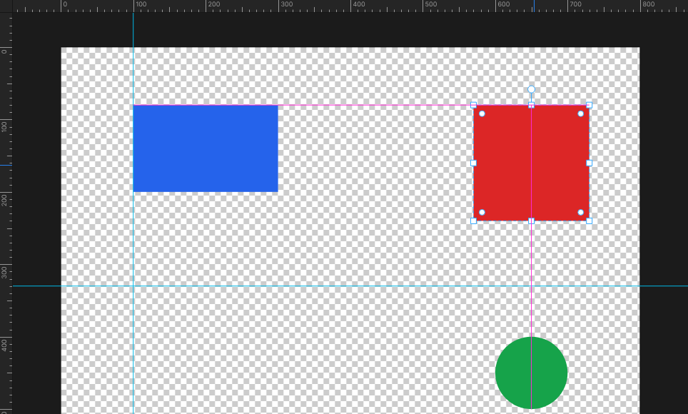
Line things up exactly: drag guides out of the rulers, and let shapes snap to them and
to each other.
Drag from the top or left ruler onto the canvas to make a guide.
Drag a guide with the Move tool to reposition it (Shift rounds to 10 px), or drag it
back onto a ruler to delete it.
Move or draw near a guide, and it snaps there. With
Smart Guides on, it also snaps to the edges and centres of other
objects and of the artboard, and magenta lines show what lined up.
Rulers
Rulers run along the top and left, in document pixels. Their ticks re-scale with
zoom, and a marker follows the cursor.
View → Rulers (Ctrl+R) turns them off.
Guides
View → New Guide… places a guide at an exact position.
Show Guides (Ctrl+;), Lock Guides (Ctrl+Alt+;),
Snap to Guides and Clear Guides are in the View
menu too.
Guides are part of undo.
Snapping
A moved selection snaps by its left, centre or right edge, and by its top, middle or
bottom.
A guide or smart match within 6 screen pixels takes priority over the grid.
Hold Ctrl/⌘ while dragging to skip snapping.
In the file
Guides are saved in the file as invisible metadata (data-sc-guides on
the root <svg>), which renders nothing.
SVGCraft Help
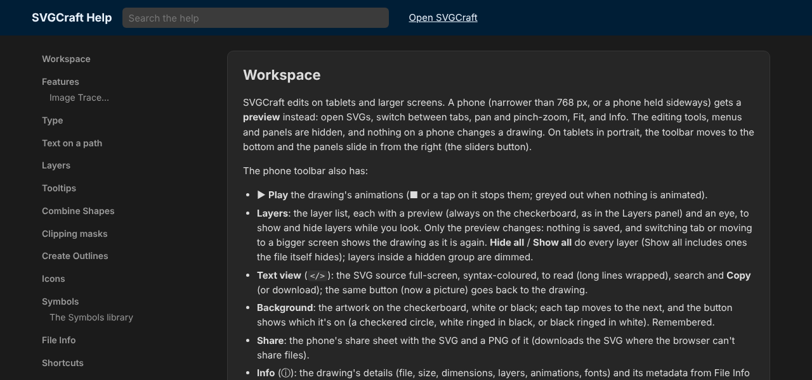
Look up how to do something, from anywhere in SVGCraft.
Choose Help → SVGCraft Help (F1) to open this guide in its own tab,
with every feature listed down the side and a search box.
Click the ? in a dialog's title bar, or a panel's tab bar, to open
the topic for it.
Press F1 with a dialog open to go to that dialog's topic.
On a phone, Info has a Help button.
Theme
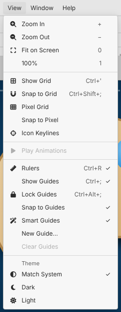
Choose a dark or light editor.
Click the sun / moon button at the top right to switch between dark and light. (It's
hidden in windows narrower than 1024 px.)
Or choose View → Match System, Dark or
Light.
SVGCraft follows your system's setting until you choose, and remembers your choice.
Features
Import
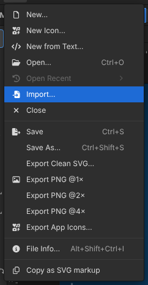
Bring artwork into SVGCraft: a whole drawing to edit, or an SVG or bitmap to add to
the one you're working on.
File → Open… (Ctrl+O) → opens an SVG as a drawing of its own, in a
new tab.
File → Import… → places an SVG (as a group, scaled to fit) or a
PNG, JPEG, WebP or GIF into the current drawing.
Drag and drop files onto the window → the same, without the menu.
Edit → Paste (Ctrl+V) → pastes SVG markup or an image from the
clipboard. Edit → Cut and Copy put the selection
on the clipboard as SVG.
Good to know
Every SVG that comes in (opened, imported, pasted, restored from this browser, or in a
library file) is sanitised with an allowlist, because it goes into the editor's own
page:
Only SVG drawing elements are kept: no script, foreignObject, or
elements from other namespaces (such as HTML <base>,
<form> or <meta>).
The file's own animation elements never enter the page either. Those that do what an
animation preset does become that preset (see Animate); the
others are left out, and a message says how many.
Event handlers (on*) are removed.
Links may only point inside the file, except image data: URLs and
http(s) / mailto on <a>. They're
checked as the browser reads them, so a hidden tab can't disguise
javascript:.
url(…) that would fetch from another server is dropped from styles and
paint attributes, so opening a file never contacts anyone.
<style> rules are baked into style attributes, so they can't
restyle the editor. <title> and <desc> keep
their text only.
Root-level paint like fill="none" stroke="currentColor" (common in icon
sets) is pushed down to the shapes, so it survives.
Units and page size
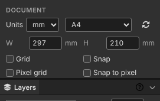
Work in millimetres, inches or points, or set the drawing to a standard paper or
screen size.
Open the Properties panel. The Document settings
are at the bottom.
Pick the Units you want to see and type lengths in.
Pick a Page size from the menu beside Units to resize the artboard
to it, or type a W and H of your own.
Click ↻ beside the page size to turn the page between portrait and landscape.
Settings
Units: pixels, millimetres, centimetres, inches or points. They're
used by the rulers, W and H, guide positions, the X/Y/W/H transform fields, Image
and Canvas Size, the grid and the status bar. The grid takes a round size in the new
units (5 mm, ¼ in…).
Page size: A5, A4, A3, US Letter, Legal, Tabloid, business card,
Full HD or square post. It also sets its units, and keeps the artboard's
orientation.
W and H: the artboard's size, anchored top-left.
Good to know
Strokes, type and effects stay in pixels, as in Photoshop.
Inside, the drawing is always in pixels (96 per inch), so changing units changes
nothing but the numbers.
A drawing in mm, cm, in or pt is saved with its real-world width and height
(width="210mm"), so print, laser-cutter and plotter software know its
size. The viewBox stays in pixels.
Opening a file sized in real units shows it in those units. One drawn in other units
(a viewBox in mm, say) is scaled to pixels, keeping its real size. Plain pixel sizes
are left as they were.
Image Trace…
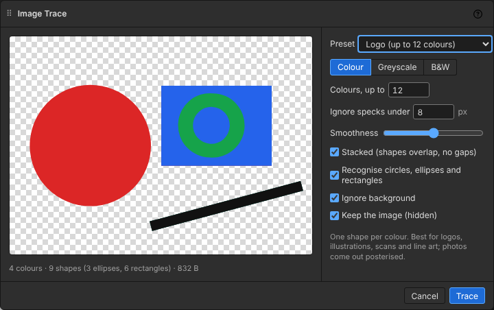
Turn a bitmap (a logo, icon, scan or line drawing) into vector shapes you can edit.
Place the image (File → Import…, or drop it on the canvas) and select it.
Choose Image → Image Trace…. It's greyed out until an image is
selected (see "What counts as an image", below).
Pick the Preset closest to your image, then adjust the settings
while you watch the preview. The line under the preview gives the result's colours,
shapes and size.
Click Trace. Each colour becomes its own layer in an "Image Trace"
group, named like "Colour #2563eb · 34%".
Settings
Preset: Logo (up to 12 colours, background left out), Illustration
(16), Photo (24, posterised) or Sketch (black and white). Changing a setting below
switches it to Custom.
Colour / Greyscale / B&W: trace in colour, in greys, or in pure
black and white at a Threshold you set.
Colours, up to: a maximum. Colours that look the same merge, so a
flat logo keeps exactly the colours it has.
Ignore specks under: drops shapes smaller than this (noise, JPEG
artefacts).
Smoothness: how much outlines are smoothed into curves. 0 gives
pixel-exact polygons; real corners stay sharp at any setting.
Stacked (on by default): the largest colour goes at the bottom and
each layer also covers every colour above it, so the layers overlap and no hairline
gaps show. Turn it off for shapes that just touch, each only its own colour.
Recognise circles, ellipses and rectangles (on by default): an
outline within about a pixel of one becomes a true ellipse or a rectangle (with
rounded corners when they fit better). Blobs under 12 px aren't taken for boxes.
Ignore background: leaves out the colour round the edge of the
image, where it touches the edge.
Keep the image (hidden): keeps the original under the trace,
hidden, instead of replacing it.
What counts as an image
Select one layer that draws exactly one picture:
An image layer, or a group holding one (the trace
goes into the group, beside the image).
A <use> of an image or a symbol: an image kept
in <defs> and drawn by reference, as other apps export it, or a
symbol instance whose symbol holds one image. The trace replaces the instance, where
it's drawn; the symbol itself is left alone.
A shape filled with an image pattern, such as Figma's image fills.
The pattern's first tile is traced where it's drawn, whole: it isn't cut to the
shape's outline, and repeats of the tile aren't traced.
A symbol or group drawing several images asks you to pick one in the Layers panel.
When it won't trace
When Image Trace can't read the picture, it says why above the status bar (and in the
browser's console):
"linked from elsewhere": the picture isn't embedded in the drawing.
Import the image file itself (File → Import…).
"damaged, or in a format this browser can't read": the picture data
doesn't decode. Re-export it as PNG or JPEG and import that.
"completely transparent": there are no visible pixels to trace.
Locked: an image locked with Lock all is refused; unlock it first.
"Nothing left to trace with these settings" in the dialog: lower
Ignore specks under, or turn off
Ignore background (on a picture that's mostly one colour, that
colour is the background).
If the background thread fails, tracing carries on in the page (a note goes to the
console), just a little slower.
Good to know
Best for logos, icons, illustrations, scans and line art. Photos come out
posterised.
Each colour is taken from the solid inside of its areas, not their blended edges, so
flat colours come out exact, and thin slivers of in-between colour along
anti-aliased edges fold into their neighbours.
It reduces the image to a few colours (k-means in Lab, so similar-looking colours
group together), traces each colour's outline and fits curves to it. Images are
traced at 400–1000 px on the long side, in a background thread, so the page doesn't
stall.
Image Size…
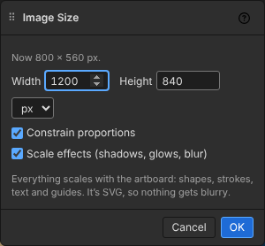
Make the whole drawing bigger or smaller: the artboard and everything on it.
Choose Image → Image Size… (Ctrl+Alt+I).
Type a new Width or Height, in the document's
units or in percent.
Click OK. It's one undo step.
Settings
Constrain proportions: change the width and the height follows, and
the other way round.
Scale effects (on by default, Photoshop's Scale Styles): scales
layer-effect distances and sizes too (shadow, glow, blur).
Good to know
It's SVG, so nothing is resampled or blurred.
Each top-level layer gets the scale on top of its transform, so strokes, text,
patterns and gradients scale with the shapes. Guides scale too.
Animation distances always follow the art.
Canvas Size…
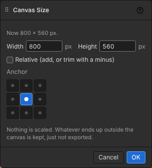
Add room round the drawing, or trim it, without scaling anything.
Choose Image → Canvas Size… (Ctrl+Alt+C).
Type a new Width and Height.
Click an Anchor square for the part that stays put.
Click OK.
Settings
Relative: the numbers are added to the current size (or trimmed
with a minus) instead of replacing it.
Anchor: the centre grows or trims every side equally. A corner or
an edge keeps that side fixed.
Good to know
Content and guides shift by whole pixels and the view follows, so nothing jumps on
screen.
Whatever ends up outside the artboard is kept, just not exported.
The W and H in Properties → Document also resize
the artboard, anchored top-left.
Grayscale and black & white
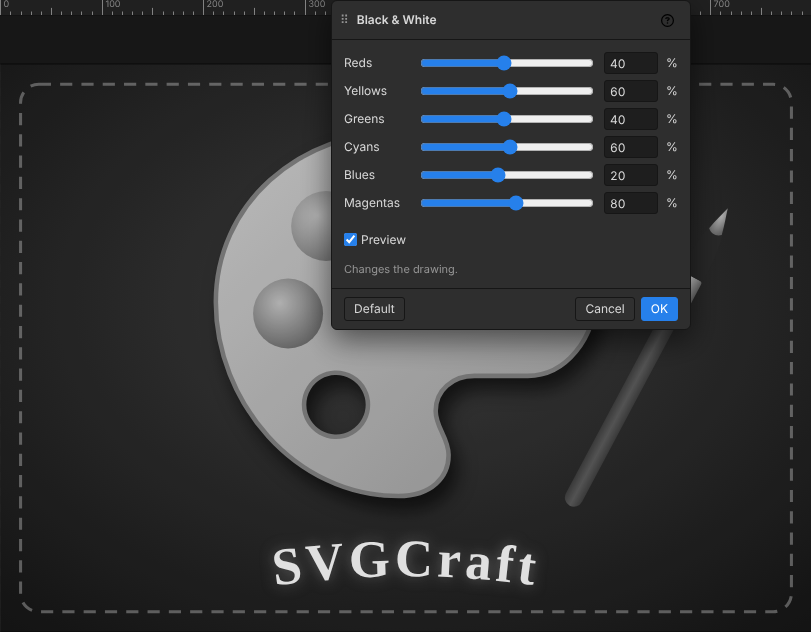
Turn a drawing, or just some layers, grey or pure black and white, as in Photoshop.
The colours themselves change, so the saved SVG really is grey.
Select the layers to change, or select nothing to change the whole drawing.
Choose one from the Image menu (below).
In a dialog, adjust it while the drawing previews, then click OK.
Options
Image → Adjustments → Desaturate (Shift+Ctrl+U): every colour to
the grey of the same lightness. No dialog.
Image → Adjustments → Black & White… (Alt+Shift+Ctrl+B):
Photoshop's six hue sliders (Reds, Yellows, Greens, Cyans, Blues, Magentas) and its
defaults, previewed live. Default puts the sliders back.
Image → Adjustments → Threshold…: pure black and white, split at a
Level you set, previewed live.
Image → Mode → Grayscale: the brightness the eye sees. No dialog.
Good to know
They change fills, strokes, gradient stops, patterns, symbols and markers in use,
Layer Style colours and embedded images, pixel by pixel.
A gradient, pattern or symbol shared with layers outside the selection gets a copy
of its own first, so only the selection changes.
Each is one undo step.
Layers locked against all edits, and linked (not embedded) images, are left as they
are.
Crop
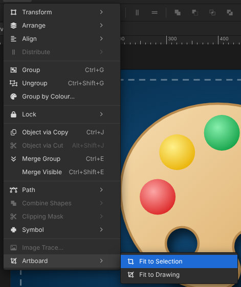
Fit the artboard tightly round your artwork, with no empty margin.
Image → Crop to Selection → the artboard fits round the selected
layers.
Image → Crop to Drawing → the artboard fits round everything
visible.
Good to know
The box is rounded out to whole pixels, and it's what's actually painted, so nothing
is shaved off. Stroke width and position (Center, Inside, Outside), mitre tips at
sharp corners (up to the mitre limit), square and round caps, round joins and
effects (drop shadow, outer glow, blur) all count, including on rotated and scaled
layers.
Hidden layers don't count.
The drawing and the guides shift so the artboard still starts at 0, 0, and nothing
moves on screen.
Anything left outside the artboard is kept, but it isn't exported.
Define Pattern and Copy as SVG frame the selection the same way.
Select menu
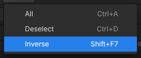
Select everything, nothing, or everything you haven't selected.
Select → All (Ctrl+A) → selects every layer.
Select → Deselect (Ctrl+D, or Esc) → selects nothing.
Select → Inverse (Shift+F7, or Ctrl+Shift+I where the browser
allows it) → selects every visible layer that wasn't selected.
Good to know
If the selection includes a shape inside a group, Inverse works with individual
shapes. Otherwise it works with top-level layers.
History panel
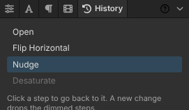
Go back to any earlier point in your work, as in Photoshop.
Open the panel with Window → History.
Click a step to go back to it. The steps after it dim.
Redo brings dimmed steps back, until a new change replaces them.
Good to know
It lists every step since the drawing was opened.
Each step is named by what made it: the menu command or shortcut, the tool you
dragged with, or the panel control you changed.
Documents
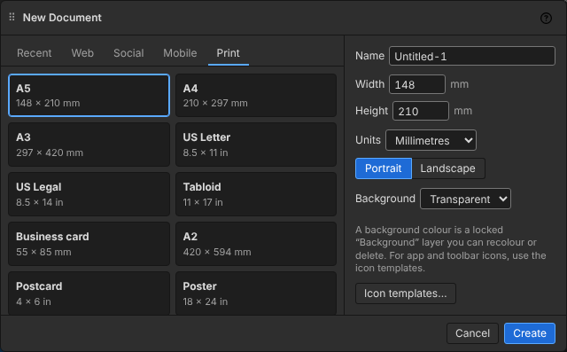
Start a new drawing at the size you need: a screen, a social post, a phone or a sheet
of paper.
Choose File → New…, or click + in the tab bar.
Pick a category and a preset, or type a Width and
Height in any Units.
Set the Name, the orientation (Portrait or
Landscape) and the Background.
Click Create (or press Enter, or double-click a preset). The
drawing opens in a new tab.
Social: Instagram, stories, X, link previews, YouTube and LinkedIn.
Mobile: iPhone, Android, iPad and Apple Watch.
Print: A5–A2, US Letter, Legal, Tabloid, business card, postcard
and poster.
Settings
Background: Transparent, or a White, Black or custom colour. A
colour becomes a "Background" layer at the bottom, locked in place as in Photoshop.
Recolour it, or unlock and delete it.
Icon templates…: switches to New Icon, for app and toolbar icons.
Good to know
The dialog remembers your last settings.
Open, close and switch tabs
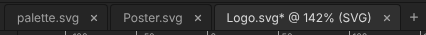
Work on several drawings at once, each in its own tab.
File → Open… (Ctrl+O) → the file opens in a tab of its own. An
untouched Untitled tab is reused. File → Open Recent lists the
files you've had open lately (see Open Recent).
Click a tab → switch to that drawing. Each tab keeps its own drawing, undo history
and zoom.
Click a tab's ✕, middle-click it, or choose File → Close → closes
the drawing. If it has unsaved changes, you're asked first:
Save (the default) saves it, then closes it;
Don't Save closes it without its changes;
Cancel keeps it open.
A * after the name → the drawing differs from the version last opened
or saved.
Good to know
Save (Ctrl+S) clears the *, as does the Export
download. Undoing back to the saved version clears it too. PNG export doesn't count
as saving.
A drawing opens fitted to the window. It stays fitted while the canvas changes size
(a pane docking, panels folding, the window resized, a phone turned) until you zoom
or pan it yourself. A fitted drawing comes back fitted, whatever size the window is
then.
Closing the last tab leaves a blank workspace, as in Photoshop. Only New, Open (or
dropping a file on it) and the view settings work until a drawing is open, and it
stays blank after a reload.
Open Recent
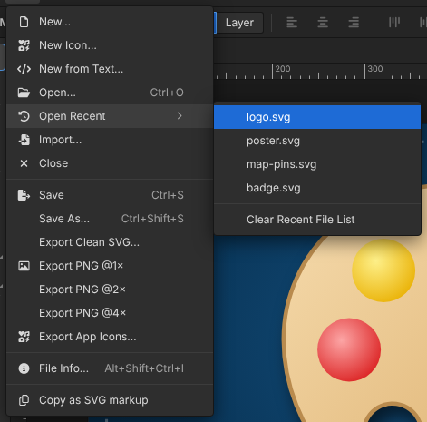
Get back to a file you've worked on lately without hunting for it.
Choose File → Open Recent.
Click a file's name → it opens in a tab of its own. If it's already open, its tab
comes forward instead.
Settings
Clear Recent File List → empties the list.
Good to know
The list holds the last 10 files you opened (File → Open…, dropped on the window, or
opened with the installed app) or saved with Save As…, newest first. It's kept in
this browser, so it's still there after a reload.
In Chrome, Edge and other Chromium browsers the list points at the files themselves:
a file opens as it is now, and Save goes back to it. The browser may ask once a
session before letting the page read it again. A file that's been moved or deleted
since is taken off the list.
Browsers that can't reach files later (Firefox, Safari, phones) keep a copy of each
file as it was opened instead (up to 5 MB each).
Save and Save As
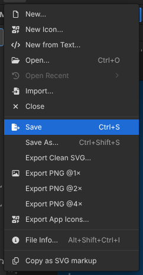
Keep your drawing as an SVG file that reopens with everything editable.
File → Save (Ctrl+S) → saves the drawing. A new drawing asks where
to save it the first time.
File → Save As… (Ctrl+Shift+S) → saves to a new file, and carries
on there.
Good to know
In Chrome, Edge and other Chromium browsers, a drawing opened from a file (File →
Open, dropped on the window, or opened with the installed app) saves straight back
to that file. The browser asks once a session before letting the page change it.
The link to the file is kept with the drawing in this browser, so Save still goes
back to it after a reload.
Browsers that can't write to files (Firefox, Safari, phones) download the SVG
instead. There the menu says Download SVG, and Save As… isn't
shown.
Kept in this browser
All open drawings are kept in this browser (IndexedDB) as they change. A reload or a
later visit brings back the same tabs, the same * marks and the same
view.
Keeping waits for a pause in your changes, but closing or reloading the page keeps
them at once, so even the last change survives.
The browser's copy is per browser and per machine: Save to keep a file.
A drawing autosaved by an older version of SVGCraft is brought over as a tab.
Export
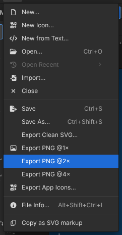
Get your drawing out as a file or onto the clipboard, for use elsewhere.
The Export button (top right) → downloads the drawing as SVG.
File → Export PNG @1×, @2× or
@4× → downloads a PNG with a transparent background.
File → Copy as SVG markup → puts the drawing (or the selection) on
the clipboard as SVG markup.
File → Export Clean SVG… → plain SVG for the web: see
Export Clean SVG….
Export Clean SVG…
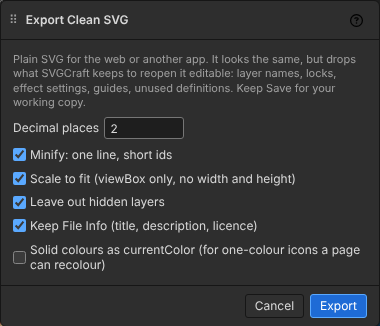
Save plain SVG for the web or another app, without SVGCraft's editing data.
Choose File → Export Clean SVG….
Set the options (they're remembered).
Click Export. It saves <name>.min.svg.
Keep Save for your working copy: a clean SVG reopens as plain shapes.
Options
Decimal places for coordinates (2 by default). Path data is
compacted too.
Minify (on by default): one line, with short ids.
Scale to fit (on by default): only a viewBox, no width and height.
Leave out hidden layers (on by default).
Keep File Info (on by default): the title, description and licence.
Solid colours as currentColor: for one-colour icons a page can
recolour with CSS.
Good to know
It draws exactly the same: effects, clips, masks, gradients and patterns stay as the
real SVG that draws them.
It leaves out what SVGCraft keeps to reopen the file editable: every
data-* attribute (layer names, locks, effect settings, guides…),
unreferenced ids, unused defs, comments, empty and attribute-free groups, and
attributes set to their defaults.
Shape tools
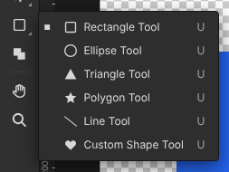
Draw rectangles, ellipses, triangles, polygons, stars, lines and arrows, or any shape
from the Symbols library.
Pick a Shape tool (U). The toolbar shows one Shape button, the last tool used: hold
it, right-click it or Alt-click it for the flyout.
Set its options in the options bar: Radius for a rectangle,
Sides and Star ratio for a polygon,
Arrowheads for a line, Shape for a custom shape.
Drag a box on the canvas. Shift makes the sides equal (a line snaps to 45°), and Alt
draws from the centre.
Polygon: Sides, and a
Star ratio below 100% pulls every other point in to make a star.
Line (L): Arrowheads at the
Start, the End or both.
Custom Shape: any shape from the Symbols library, drawn into the
box you drag with its proportions kept.
Pick a custom shape
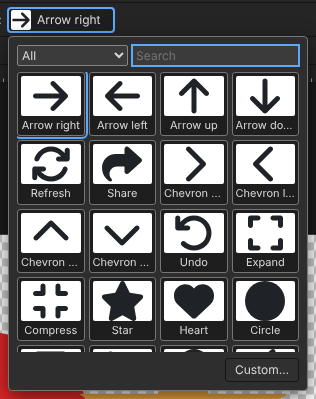
Click Shape in the options bar: it shows the current shape.
Find one: type in Search, or narrow it by category.
Click a tile (or use the arrow keys and Enter). Esc, or a click elsewhere, closes it
as it was.
It's the Symbols library's current shape: clicking a tile in the
Libraries window's Symbols tab picks it too (in
its Library), and the window marks the one you picked here.
Custom… opens the Libraries window's Symbols, to save, rename or
delete shapes.
Draw at an exact size
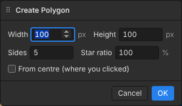
Click without dragging (with any Shape tool but Line) for Photoshop's
Create box:
Width and Height, in the document's units.
Corner radius (rectangles), or Sides and
Star ratio (polygons).
From centre (where you clicked): off, the click is the top-left
corner.
Good to know
Shift+U steps through the group. R, O and L still pick the rectangle, ellipse and
line.
A polygon or star stays live: Properties changes its sides and star ratio later,
until you edit its points by hand.
Properties turns arrowheads on or off for any selected line or open path.
Arrowheads are one shared SVG marker drawn in each line's own stroke colour
(context-stroke), sized by its stroke width.
Pencil
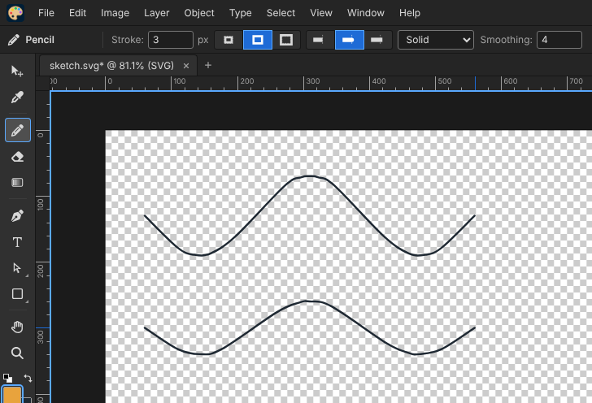
Draw freehand lines, smoothed as you go.
Pick the Pencil.
Set Smoothing in the options bar (0 to 10; 4 to start with). Higher
gives smoother, simpler curves.
Drag on the canvas to draw.
Good to know
The stroke settings in the options bar (Stroke options) apply to what you draw.
How it works: the line you draw is simplified (RDP) and then fitted with curves
(Catmull-Rom → Bézier).
Pen
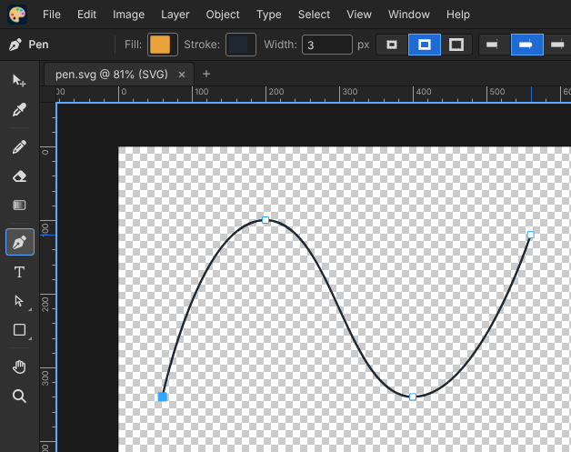
Draw precise paths, point by point, with straight lines and smooth curves.
Pick the Pen.
Click for a corner point, or drag for a smooth point with curve handles.
Carry on clicking or dragging. Shift snaps to 45°, and Backspace removes the last
point.
Finish: click the first point to close the shape, or press Enter or double-click to
leave it open. Esc also ends it.
Scale, rotate and skew the selection by hand or by exact numbers, as in Photoshop.
Select what to change and choose Edit → Free Transform (Alt+T).
Drag a corner to scale, or the top knob to rotate. Or type exact X,
Y, W and H (with the proportion
lock), an angle, and horizontal (H) or vertical
(V) skew in the options bar.
Press Enter or click ✓ to commit. Esc or ✕ cancels the whole session.
Edit → Transform
Scale, Rotate and Skew open the
same session with the handles set to that job: corners and edges only scale, any
handle rotates, or edge handles slide along their edge to skew. Shift snaps angles
to 15°.
Rotate 180°, Rotate 90° Clockwise,
Rotate 90° Counter Clockwise, Flip Horizontal and
Flip Vertical each apply in one step, about the selection's centre.
Again (Alt+Shift+T) repeats the last transform about the
selection's current centre.
Again with Copy (Ctrl+Alt+Shift+T) duplicates first, so a 30°
rotation repeated 11 times makes a ring of 12.
Good to know
Browsers keep Ctrl+T and Ctrl+Shift+T for their tabs, so these shortcuts use Alt.
Distort, Perspective and Warp aren't included: SVG transforms can only make
straight-line (affine) changes.
Align and distribute
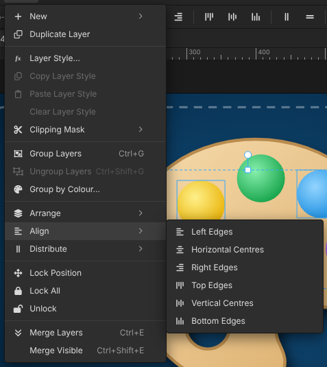
Line objects up with each other, or space them out evenly.
Select the objects with the Move tool.
Click an align or distribute button on the Move tool's options bar, or choose
Layer → Align or Layer → Distribute.
Options
Align: Left Edges,
Horizontal Centres or Right Edges;
Top Edges, Vertical Centres or
Bottom Edges. Objects align to the selection's bounds.
Distribute (horizontally or vertically): spaces three or more
objects with equal gaps, leaving the outermost two where they are.
Good to know
With one object selected, it aligns to the artboard instead, as in Photoshop.
Eyedropper
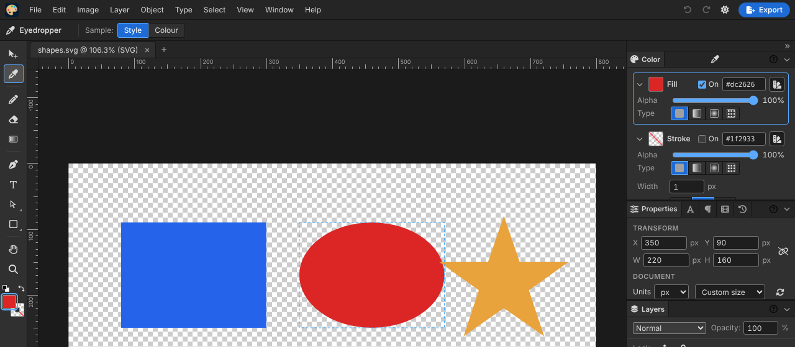
Copy a style or a colour from something already in the drawing.
Pick the Eyedropper (I).
Choose what it samples in the options bar: Style or
Colour.
Click the shape or the colour you want.
Options
Style: copies a shape's fill, stroke, alpha, stroke width and
opacity into the current settings, and applies them to anything selected.
Colour: takes the exact pixel you click, including blended
transparency and placed images, into the active paint. A ring around the cursor
previews the colour.
Tips
Alt-click sends the colour to the other paint (fill or stroke).
In Chromium browsers, the eyedropper button on the Color panel picks a colour from
anywhere on the screen.
Edit points
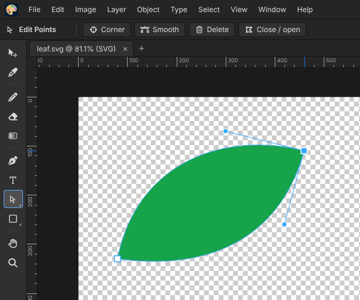
Reshape a path, or a basic shape, by moving its points and curve handles.
Pick Edit Points (A), or double-click a shape with the Move tool.
Click the shape, then drag its points and Bézier handles. The arrow keys nudge
picked points.
Press Esc, or pick another tool, when you're done.
Picking points
Shift-click points to pick several, or drag round them.
Choose what a drag picks with from the Edit Points button's flyout (as with the
Shape tools), or step through them with Shift+A: Rectangle Select,
Ellipse Select (an oval) or
Lasso Select (freeform).
As in Photoshop, a drag begun with Shift adds to what's picked, and one begun with
Alt takes points away. Alt pressed during a drag grows a rectangle or oval from its
centre.
Changing points
Double-click a segment to add a point.
Double-click a point to switch it between corner and smooth (or use
Corner and Smooth in the options bar).
Delete (Del) removes the picked points.
Close / open adds or removes the closing segment.
Smooth points keep their handles in line. Alt-drag a handle to break one.
Good to know
Works on paths with any command (arcs included) and on rectangles, ellipses,
circles, lines, polylines and polygons.
A basic shape turns into a <path> only once you change it.
Fill rule and path direction
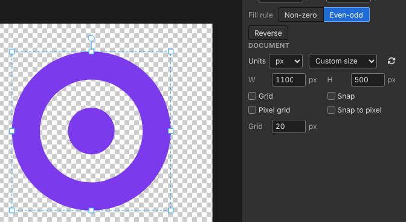
Decide which parts of a path that crosses itself, or holds other loops, are filled and
which are holes.
Select a path, polygon or polyline.
In Properties, set Fill rule to
Non-zero or Even-odd, or click
Reverse to run the outline the other way.
The same commands are in Object → Path:
Non-Zero Fill Rule, Even-Odd Fill Rule and
Reverse Direction.
Options
Non-zero (SVG's default): fills an area unless the outline's
directions around it cancel out.
Even-odd: makes every nested loop a hole, whichever way it runs.
Reverse (Reverse Path Direction): runs the selected paths,
polygons, polylines and lines the other way. Under non-zero, a loop running against
its outer shape is a hole.
Good to know
The fill rule is set on each selected shape, inside groups too, and saved as
fill-rule (nothing for non-zero, unless a group or style above would
make it even-odd).
Reversing also flips where text on the path starts and which way dashes and markers
run. A closed path keeps its starting point.
Reversing turns rectangles, circles and ellipses into paths (a live rectangle's
corners stop being editable as corners).
Animate
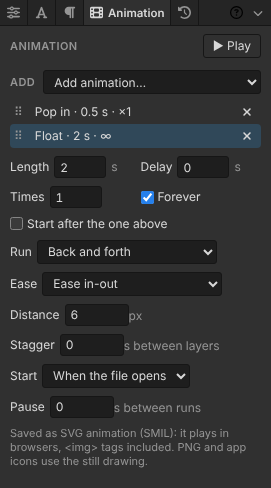
Make a layer or group fade, slide, spin, pulse, draw itself on and more, in the saved
SVG.
Select one layer or group and open the Animation tab.
Choose a preset from Add animation….
Click its row and set its options below the list.
Click ▶ Play (or View → Play Animations) to
preview the whole drawing. Esc, a click on the canvas or any edit stops it.
Presets
Entrances: Fade in, Slide in, Pop in, Zoom in, Drop in (falls in
and bounces to rest), Back in (slides in, overshoots and settles), Roll in, Flip in
(turns into view), Wipe in (uncovered from a side), Iris in (uncovered from the
middle out) and Blur in (comes into focus). Run any of them in
Reverse to take the layer away the same way.
Exits: Fade out, Slide out, Zoom out, Hinge (swings on its top-left
corner, then drops away).
Loops: Spin, Pulse, Bounce, Shake, Float, Blink, Swing (back and
forth about a point, like a hanging sign), Heartbeat (a double pulse), Jello (a
wobble that settles), Flip (turned over like a card, and back), Glow pulse (a
coloured glow round it that comes and goes), Shine (a highlight sweeping across it,
as on a button), Rubber band (squashes and stretches), Tada (grows with a wiggle),
Head shake (a small shake that turns), Wobble (sways side to side), Breathe (a slow
fade down and up), Ripple (rings spreading out from under it and fading, one after
another; Grow to sets how far, Ring width and
Ring colour their look) and Flipbook (a group's layers shown one at
a time, bottom first, as the frames of a flipbook or a loading spinner; the length
is the whole round, and a set number of times ends on the last frame).
Line effects: Draw on, Draw off, Dash march, and Stroke pulse (the
outline grows thicker and back; Grow to sets how thick, as a
percentage of its width).
Colour: Colour cycle; Gradient flow (bands of its own colour and a
Second colour moving across it, the way
Angle points); Pattern scroll (stripes of the
Stripe colour, Stripe width wide, sliding over it
at the Angle).
Text: Typewriter: the letters appear one by one over the length.
Run backwards, they go one by one.
Settings
Length and Delay, in seconds.
Times, or Forever.
Start after the one above: chains it to the end of the previous one
(after its first run, if that one loops forever), with its delay counted from there.
An entrance, a loop and an exit can then follow one another without adding up
delays.
Run: Normal, Reverse or
Back and forth.
Ease: Linear, Ease, Ease in, Ease out or Ease in-out.
Each preset's own options, such as the slide or wipe side and distance, turns, how
far to grow, the colour to cycle to, the angle and point a Swing turns about, which
way a Flip turns, how blurred Blur in starts, or a Glow pulse's size and colour.
Stagger (a group, or a text layer's letters): see
Stagger.
Several on one layer
A layer can have several animations. They play together, each after its own delay.
Drag a row's ⠿ grip, or press Alt+↑ / Alt+↓, to reorder them. When two move or scale
the layer, they combine in list order.
In the file
Animations are kept as settings on the layer (data-sc-anim) and written
out as SVG animation (SMIL: <animate>,
<animateTransform>, <set>) only when the
drawing is saved. Editing and undo always see the shapes at rest.
Moves, spins and scales are additive, so they happen about the layer's own centre,
on top of its transform.
SMIL plays in every current browser, including SVG shown in an
<img> tag. Each animation adds about 150–300 bytes.
Export Clean SVG keeps the animation and rounds its coordinates like the rest. PNG,
app icon and favicon exports use the still drawing.
Wipe in, Iris in, Blur in, Glow pulse, Shine, Ripple, Gradient flow and Pattern
scroll need a clip, filter, mask or paint of their own: the saved file wraps the
layer in a group that carries it (Shine's highlight, Ripple's rings, and the
gradient or stripes, masked by the layer, go in that group too). Reopened in
SVGCraft, the group is taken off again; a file from Export Clean SVG reopens with it
as a group of its own, and those animations left out.
Reopening a saved file rebuilds the animations from their settings.
Animations from other files
When you open, import or paste an SVG with its own SMIL animations, each one that does
what a preset does becomes that preset on its layer, ready to edit and play:
A rotation about the layer's centre becomes Spin; opacity from 0 to
1 or back becomes Fade in or Fade out; a fill
going to another colour becomes Colour cycle; a motion along a path
(<animateMotion>) becomes Move along path, its
path a new "Motion path" layer; and so on for every preset, with its length, delay,
repeats, direction and ease.
A file saved by Export Clean SVG (which drops SVGCraft's settings) comes back with
the animations it had.
A move about another resting place (bars bobbing from 5 below to 5 above) becomes
the preset that moves that way (here Float, 10 up and back), with
the layer moved to where the move starts.
What no preset does is left out, and a message says how many; its
More info button says which and why (see
Animations left out). Among them: a motion at a
fixed angle, an animation that starts on another animation's end, one inside a
symbol, and CSS @keyframes.
An animation that replaces a layer's own transform (SMIL's default) is only kept
when the layer has none, since a preset adds to it.
Animations left out
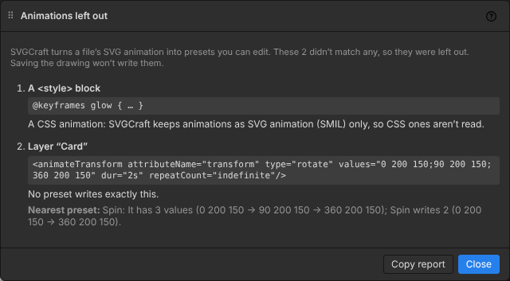
See exactly which of a file's animations SVGCraft couldn't keep, and why, so you can
fix the file or rebuild them with presets.
Open the file. If some animations can't be kept, a warning says how many.
Click More info in the warning → the report lists each one.
What it shows
Where: the layer it was on, or the part of the file (a
<style> block, the whole drawing, an element that isn't there).
The markup: the animation element as it was in the file.
Why: the reason it was left out: its timing can't be set in
SVGCraft, it animates something no preset does, it's a CSS animation, it's inside a
symbol…
Nearest preset: when a preset nearly matched, which one and how it
differs (its values, timing or turning point), so you can add that preset and adjust
it.
Settings
Copy report → the whole report as text, to paste into a bug report
or a note.
Good to know
What's left out isn't in the drawing any more: saving won't write it. Reopen the
original file to get it back.
When an animation starts
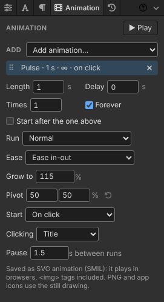
Start an animation on a click or when the pointer is over a layer, after another
layer's animations, or with a pause between its runs.
Select the layer, open the Animation tab and click the animation's
row.
Choose under Start:
When the file opens (after its Delay).
On click: when the layer is clicked, or the one chosen under
Clicking, such as a button.
On hover: when the pointer is over it (or the one chosen under
Pointing at). One that runs Forever stops when
the pointer leaves.
After another layer: when the animations of the layer chosen
under After have finished (their first run, for one that runs
forever).
For a loop, set Pause to wait that long between one run and the
next.
Good to know
Delay counts from the start you chose: a click, the end of the
other layer's animations, or the file opening.
An entrance that waits for a click stays hidden until then.
Clicks and the pointer work where the SVG is a page of its own or part of one
(opened directly, inline, or in an <object> or
<iframe>). An <img> tag never passes them on,
so there it waits for ever.
▶ Play shows them as if the click had happened.
In the file they're SMIL begin times such as begin="button.click+0.5s",
so the layer clicked gets an id. A pause makes each run longer, holding its last
frame to the end.
Pivot
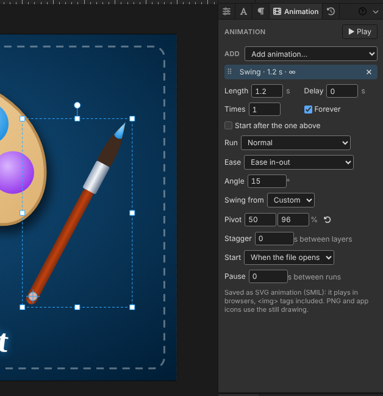
Choose the point an animation turns or grows about, as you'd move the reference point
in Photoshop's Free Transform: a clock hand turning about its end, a sign swinging
from its hook, a badge growing out of a corner.
Select the layer and open the Animation tab.
Pick an animation that turns or grows: Spin, Pulse, Swing, Heartbeat, Pop in, Zoom
in or out, Roll in, Flip in, Flip, Jello, Rubber band, Tada, Head shake or Wobble.
Drag the ⊕ on the canvas to where it should turn. Near the layer's
corners, edge middles and centre it snaps to them.
Settings
Pivot: where the ⊕ is, across and down the layer's box, in % (50 %,
50 % is the centre). Type a value to place it exactly; it can go outside the layer
too.
↺ next to it, or double-click the ⊕ → back to the centre.
Swing from picks a side of the layer; once you drag the ⊕ elsewhere
it reads Custom.
Good to know
The ⊕ shows while the Animation tab is open, for the animation chosen in its list.
Each animation on a layer has its own pivot.
The pivot is kept relative to the layer, so moving or resizing the layer takes it
along. On a rotated layer, across and down follow the layer's own sides.
Files that turn or grow a layer about a point of their own (say
rotate(0 50 50) to rotate(360 50 50)) open as that
animation with its pivot there, ready to edit.
Stagger
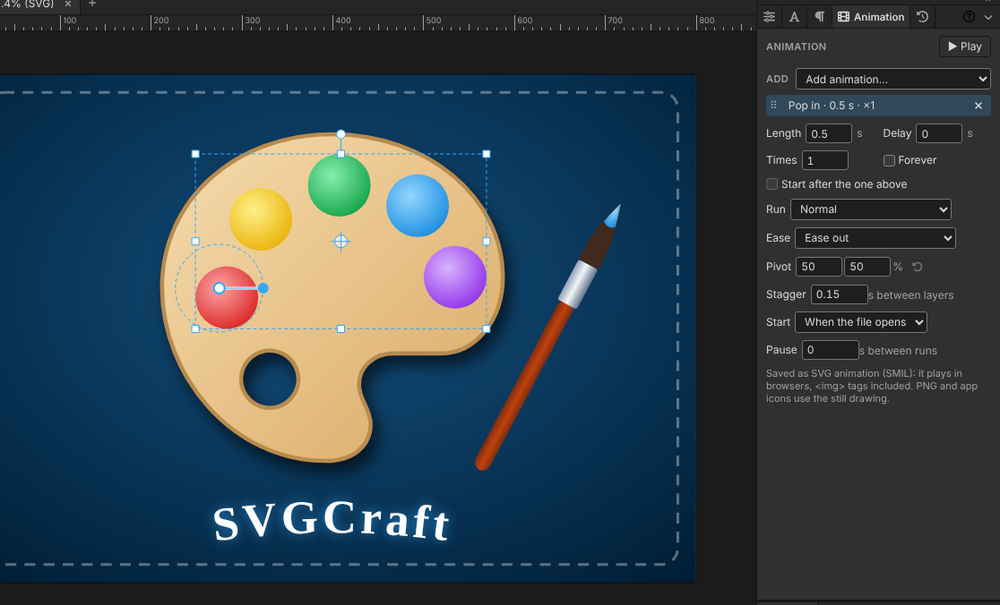
Run one animation on a group's layers, or a text's letters, one after another: paints
popping in in turn, letters fading in.
Select the group (or the text layer) and open the Animation tab.
Add an animation, as for one layer.
Set Stagger to the time between one starting and the next.
Good to know
The group's layers go from the bottom of the Layers panel to the top, each after the
stagger, with the animation's own delay before the first.
Each layer runs it about its own centre, as if you'd added it to each.
Letters work with Fade in, Fade out,
Blink and Colour cycle. Spaces are skipped. For
letters appearing at a steady pace, use the Typewriter preset
instead.
A Stagger of 0 runs it on the group (or text) as a whole.
In the file, each layer (or letter) gets its own SMIL. Saved by SVGCraft, it reopens
as the one animation on the group; Export Clean SVG reopens as an animation on each
layer.
Move along path
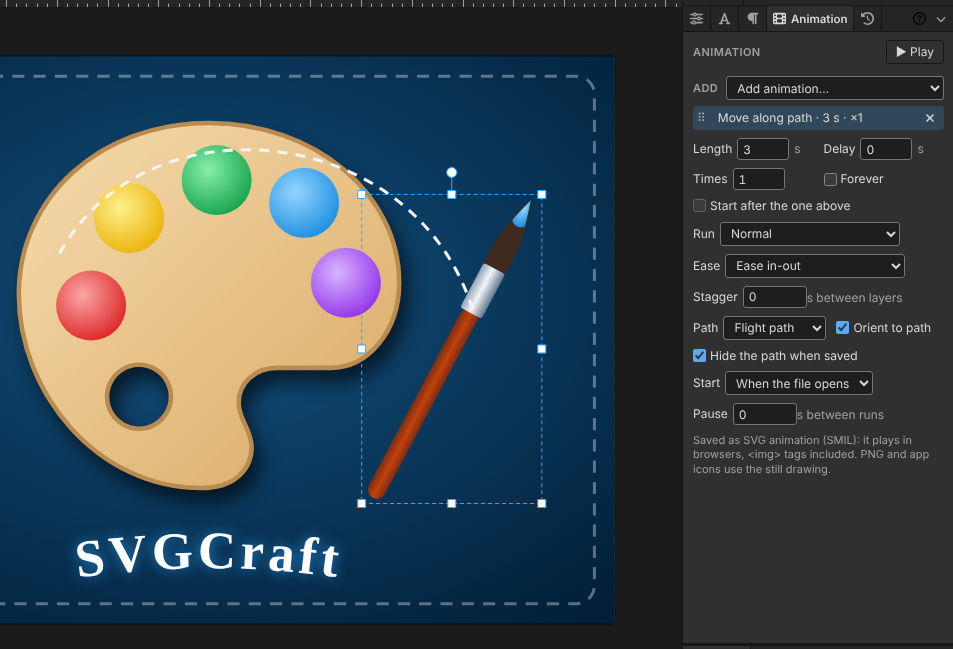
Send a layer along a line you draw: a car along a road, a plane along its flight path.
Draw the route with the Pen or Pencil, or use any shape (a rectangle, circle,
ellipse, line or polygon). It must be above the layer that moves.
Select the layer, then Shift-click the route, and open the
Animation tab.
Choose Add animation… → Move along path.
Click ▶ Play: the layer's centre travels the route from its start
to its end, then stays there.
Settings
Path: the layer it follows. Pick another shape here to change the
route.
Orient to path: the layer turns to face the way it's going, like a
car on a road. It points along the route the way it's drawn facing (its own
rightward direction leads).
Hide the path when saved: the route is left out of sight in the
saved file, so only the moving layer shows. It stays visible while you edit, and
comes back when you reopen the file.
Length, Delay, Times,
Run and Ease work as for every animation.
Reverse runs from the end of the route to its start;
Back and forth goes there and back.
Good to know
Reshape or move the route and the animation follows: it's linked, not copied. Delete
it and the animation stops, and its Path reads "— gone —" until you
pick another.
A closed shape (a circle, a rectangle) makes a loop: set
Forever for something that keeps circling.
It combines with the other animations: a layer can Pulse or Spin while it travels.
In the file it's an <animateMotion> along the route (as seen from
the layer), plus a fixed shift that puts the layer's centre on the line.
Morph
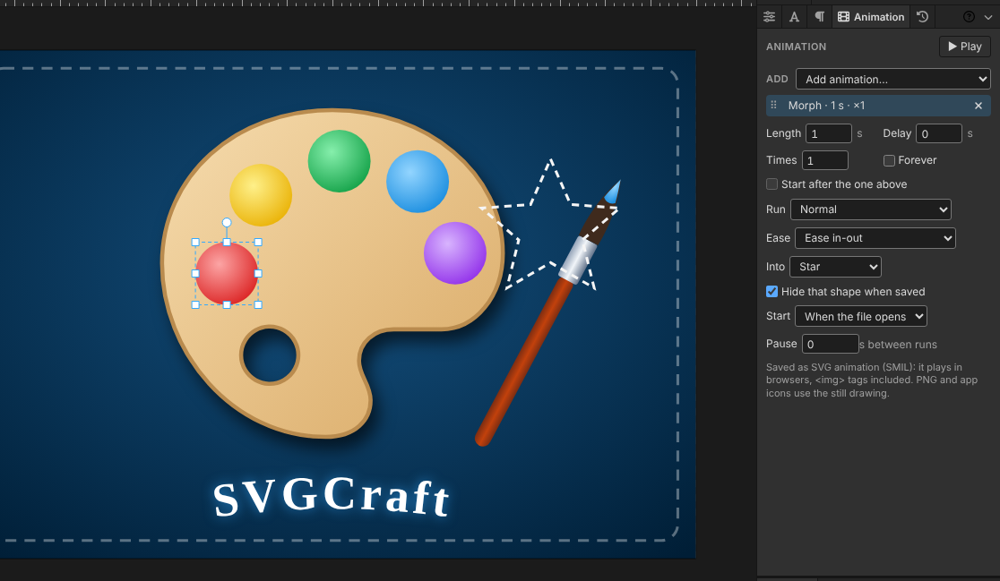
Turn one shape into another: a play icon into a pause icon, a circle into a star, a
blob that wobbles between two outlines.
Draw the shape it should become, above the layer that changes.
Select the layer, then Shift-click that shape, and open the
Animation tab.
Choose Add animation… → Morph. A rectangle, circle, ellipse, line
or polygon becomes a path (only a path can change its outline).
Click ▶ Play: the outline turns into the other shape, where that
shape is, and stays.
Settings
Into: the shape it becomes. Pick another here.
Hide that shape when saved: the target is left out of sight in the
saved file, so only the morphing layer shows. It stays visible while you edit, and
comes back when you reopen the file.
Run: Back and forth turns it into the other shape
and back, and with Forever keeps doing so;
Reverse starts as the other shape.
Good to know
Any two outlines work. Each is turned into curves; parts pair up biggest with
biggest, the one with more points sets how many both have, and the start is chosen
to keep the change smooth. A part with no partner (a hole that the other shape
doesn't have) grows from or shrinks to a point.
Only the outline changes. The fill and stroke stay the layer's own (add Colour cycle
to change the colour as well).
Reshape the target and the morph follows: it's linked, not copied.
In the file it's an <animate> of the path's d.
Opening a file with one gives a Morph, with the outline it ends on as a "Morph
target" layer.
Zoom and pan
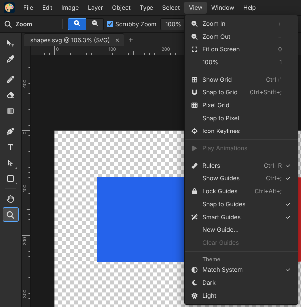
Get close to the detail, or step back to see the whole drawing.
Zoom tool (Z): click to zoom in one step (50%, 66.7%, 100%, 200%,
300% …). Alt-click, or choose the options bar's Zoom Out button, to step out.
Drag with the Zoom tool: with Scrubby Zoom on,
drag right to zoom in and left to zoom out, centred where you pressed. With it off,
drag a box to fill the window with that area.
100%, Fit Screen and
Fill Screen are on the Zoom and Hand tools' options bar.
Double-click the Zoom tool for 100%.
View menu: Zoom In (+),
Zoom Out (−), Fit on Screen (0) and
100% (1).
Ctrl/⌘ + wheel, or a pinch, zooms the canvas.
Pan: scroll the wheel (Shift+wheel goes sideways), drag with the
Hand tool, or hold Space and drag with any tool.
The page itself doesn't zoom
The browser's zoom keys (Ctrl/⌘ + =, − and 0) zoom the canvas instead, like
Photoshop's.
Ctrl/⌘ + wheel or a pinch only ever zooms the canvas, never the panels.
On phones and tablets the page can't be pinched or double-tapped bigger.
Pixel grid and Snap to Pixel
Keep icons and pixel art crisp, with edges on whole pixels.
Turn on View → Pixel Grid and
View → Snap to Pixel (or the Pixel grid and
Snap to pixel boxes under Document in Properties).
Zoom to 600% or more to see the grid.
Draw and move as usual: points and moved shapes land on whole pixels.
Good to know
The pixel grid is a 1 px grid over the artboard, shown from 600% zoom up.
Snapping to pixels keeps edges sharp in PNG exports and at small sizes.
A centred stroke of odd whole width (1, 3 px …) snaps to half pixels instead, so its
edges land on whole pixels.
Guides and smart guides still win when they're close, and Snap to Grid wins when
it's on.
Both settings are remembered.
Eraser
Rub out whole objects, or cut gaps in lines.
Pick the Eraser.
Choose Object or Cut in the options bar, and set
its Size.
Rub over what you want to erase.
Options
Object: deletes anything you rub.
Cut: splits stroked lines and paths where you rub, and leaves
filled shapes alone.
Gradients
Fill or stroke a shape with a smooth blend of colours.
Select a shape and, in the Color panel, click
Fill or Stroke to make it the active paint.
Set its Type to Linear or Radial (or back to Solid).
Edit the stops in the gradient editor below.
To set the direction on the canvas, pick the Gradient tool (G) and
drag across the selection. Shift snaps to 45°, and a radial gradient drags from the
centre outwards. Drag the end handles to adjust it.
The gradient editor
The bar: click it to add a stop, drag a stop to move it, or drag it
down off the bar to remove it.
Each stop has a colour, Opacity and
Location. The bin button deletes it.
Angle: the direction, in degrees.
Reverse (⇄) flips the stops.
Stretch with shape (off by default): off, stretching or skewing the
shape keeps the gradient at its angle, still running across the whole shape, and a
radial one stays round. On, it stretches with the shape.
Presets: the button beside the title shows the gradient in use (or
Custom). Click it for the tiles: Colour → Transparent, plus
everything in the Gradients library, which marks the same one. Picking a tile swaps
in its stops and keeps the type and angle.
+ saves the gradient to the Gradients library.
Custom…, in the picker, opens the
Libraries window's Gradients to rename, delete, import or
export them.
Tips
With a gradient active, clicking a swatch recolours the selected stop.
The Gradient tool's options bar switches between Linear and
Radial for the active paint of the selection.
Good to know
Each shape gets its own gradient, which moves, rotates and scales with the shape.
With Stretch with shape off, it's laid out in the shape's space as
the page shows it (its gradientTransform undoes the shape's stretch and
skew), and fitted to the shape again after every change, keeping where it sits in
the shape (data-fit).
Duplicates split off their own copy when edited, and unused gradients are removed
automatically.
Gradients in imported files are read, including ones that borrow stops from another
gradient.
Stroke options
Set how outlines look: thickness, position, ends, corners and dashes.
Select a shape, or pick a drawing tool to set the stroke for what you draw next.
Set the stroke under Stroke in the Color panel, or
in the drawing tool's options bar. Both show whatever other panel is open.
Settings
Width: the thickness, in px.
Align: Inside, Center or
Outside, as in Photoshop, for closed shapes (rectangles, ellipses,
polygons and closed paths).
Caps: butt, round or square line ends.
Joins: miter, round or bevel corners (in the Color panel).
Dashes: Solid, Dashed,
Dotted or Long dash.
Custom dashes: opens Photoshop's dash / gap fields in the Color
panel: up to three dash-and-gap pairs, in stroke widths. Imported dash patterns show
up there too.
Good to know
Dash lengths are in multiples of the stroke width, as in Photoshop, so they keep
their proportions when the width changes.
Dashes allow for round and square caps, which extend each dash, so dotted lines come
out as round dots.
SVG strokes are always centred, so an aligned stroke is drawn twice as wide and the
unwanted half is hidden: clipped to the shape for Inside, and painted under the fill
for Outside (masked when there's no fill). The width you set stays the visible
width.
Under a semi-transparent fill, the hidden half of an Outside stroke shows through
faintly.
Opening a path puts its stroke back to Center.
Rounded rectangles
Round the corners of a rectangle, all together or one at a time.
Before drawing: set a Radius on the Rectangle
tool's options bar.
On a selected rectangle: edit its four corners under
Corner radius in Properties. The link toggle changes them all
together.
On the canvas: drag the round handles inside the corners. Alt-drag
moves a single corner, as in Photoshop's live corners.
In the file
Equal corners stay a plain <rect rx>.
Unequal corners become a path that remembers it's a rectangle, so its radii stay
editable until you edit its points.
Patterns
Fill or stroke a shape with a repeating tile: stripes, dots, bricks, or a tile you
make.
Select a shape and make fill or stroke the active paint.
Set the paint's Type to Pattern in the Color panel.
Adjust it in the pattern editor: Scale, Angle,
Stretch with shape, or another pattern: click the pattern's name
for the library's tiles (the same ones as the Libraries window's Patterns, which
marks the one in use). Custom… opens that window, to make and
manage patterns.
Stretch with shape
Off (the default): scaling, stretching or skewing the shape leaves the tiles their
size, so a bigger shape shows more of the pattern. They still move and turn with it.
On: the tiles grow, shrink and stretch with the shape, as if it were one picture.
Make your own
Select what the tile should hold and choose Edit → Define Pattern…,
as in Photoshop. The tile is the size of the selection's visible box.
It looks the same as it does on the canvas, including transforms, gradients and clip
paths.
Good to know
The built-ins (stripes, diagonal, dots, grid, checks, crosshatch, waves, bricks,
triangles) are drawn in the paint's colour, so changing the colour re-inks them.
The tiles start at the shape's top-left corner.
As with gradients, each shape gets its own <pattern> in its own
coordinates. Unless Stretch with shape is on, its
patternTransform undoes the shape's scale and skew, and is kept so as
the shape changes.
Patterns export as plain SVG.
Libraries
Make, keep and manage your own colours, gradients, patterns and symbols, and share
them with other apps.
Choose Window → Libraries, or Custom… in any
picker (a swatch, gradient, pattern or custom shape): the window opens on that tab.
Pick a tab: Swatches, Gradients,
Patterns or Symbols.
Manage the tiles with the bar below them.
Using them is done where you work: the Color panel's Fill and
Stroke pick swatches, gradients and patterns from their own pickers, and the Custom
Shape tool draws a symbol.
The tiles
Apply: click a tile to apply it to the active paint, or Shift-click
it to apply it to the other one.
Add (+): adds the current colour (with its alpha),
saves the active gradient, or defines a pattern from the selection. Each asks for a
name.
Rename: double-click a tile, or use the pencil button.
Delete: Alt-click a tile, or use the bin button. The library isn't
in the drawing's history, so the message after it has its own Undo.
Reset (↺): brings back the built-in set for that tab.
Swatches, Gradients and Patterns all work this way; Symbols has its own bar (see
Symbols). They're saved in this browser (localStorage), like
Photoshop's presets.
Good to know
It opens docked in a column of its own between the canvas and the panels. Drag the
column's left edge (or focus it and use the arrow keys) to change its width.
Its title bar's float button turns it into a window you can move and size over the
canvas; the same button docks it back. SVGCraft remembers which, and the column's
width.
Esc or ✕ closes it, and it opens again on the tab you last used.
Export
Export, on any of the tabs, saves the whole library, symbols
included, as one svgcraft-library.zip:
svgcraft-library.json: everything, for SVGCraft.
swatches.gpl: a palette for GIMP, Inkscape and Krita.
swatches.css and gradients.css: CSS custom properties
(--name: #hex, --name: linear-gradient(…)).
gradients.svg and patterns.svg:
<linearGradient>, <radialGradient> and
<pattern> defs for Inkscape, Illustrator and browsers, each drawn
as a labelled sample. Pattern tiles draw in currentColor, set on each
<pattern>.
symbols.svg: an SVG sprite, one <symbol id="…"> per
symbol with its credit, for <use href="symbols.svg#id"/>.
README.txt: what each file is.
Kinds with nothing in them are left out.
Import
Import adds a file's contents, skipping anything you already have
(the same colour, gradient, tile or symbol, whatever its name). If something new has
the name of one of yours, SVGCraft asks once for the whole import:
Keep both (the default): the imported one becomes "Sky 2".
Replace mine: yours keeps its name and place and takes the new
definition.
Skip them.
It reads:
the exported zip (from its svgcraft-library.json);
a zip of palettes, gradients and SVGs without one (deflated or not, in folders or
not);
a JSON library;
a GIMP palette (including GIMP 3's alpha) or a GIMP gradient (.ggr);
any SVG, taking its gradients (shared stops included), patterns and symbols. Symbols
from an SVG go in a category named after the file.
Good to know
Browser storage belongs to one browser on one machine and is lost if you clear the
site's data, so export to keep a copy.
Pattern tiles and symbols from a file are sanitised like imported drawings.
Colours
Set the fill and stroke colours of what you draw or have selected, and how see-through
they are.
Click Fill or Stroke in the
Color panel (or the fill and stroke chips at the bottom of the
toolbar) to make it the active paint.
Tick On to paint it, or untick it for none.
Click the paint's swatch for the colour picker, type a hex code, or pick a swatch
with the swatches button beside the hex code (its Custom… opens the
Libraries window's Swatches).
For a gradient or a pattern, set the paint's Type: its editor opens
inside that paint's section, under the Type.
Fill and Stroke
Each folds to its first row with the arrow at its left, to save room; SVGCraft
remembers which you folded.
The stroke's width, alignment, caps, joins and dashes sit under Stroke.
Transparency
Alpha, under Fill and under Stroke: how see-through each paint is.
Opacity, in the Layers panel: how see-through the whole object is.
The three are separate, and the artboard's checkerboard shows the result.
Shortcuts
X (or Edit → Swap Fill and Stroke) swaps fill and stroke.
Shift-click a swatch to apply it to the other paint.
Selecting, moving and arranging
Pick objects, then move, resize, rotate, group and stack them.
Select: click with the Move tool. Shift-click adds, and dragging on
empty canvas draws a marquee. Select → All (Ctrl+A),
Deselect (Ctrl+D) and Inverse (Shift+F7).
Move: drag the selection, or nudge it with the arrow keys (Shift
moves 10 times as far).
Resize and rotate: drag the handles. Shift keeps the ratio, and Alt
scales from the centre. Drag the knob above to rotate.
Flip: the flip buttons on the options bar, or
Object → Flip Horizontal / Flip Vertical.
Group (Ctrl+G) and Ungroup (Ctrl+Shift+G).
Stacking order: Layer → Arrange: Bring to Front
(Ctrl+Shift+]), Bring Forward (Ctrl+]), Send Backward (Ctrl+[) and Send to Back
(Ctrl+Shift+[).
Set headlines, labels and blocks of text with the Type tool (T), which works like
Photoshop's. Text stays live and editable, and saves as ordinary SVG text.
Add text
Type a single line, or a block that wraps inside a box.
Pick the Type tool (T).
Click where the text should start for point text, which grows as
you type. Or drag a box for paragraph text, which wraps inside the
box.
Type. Enter starts a new line.
Press Ctrl/⌘+Enter, or click away, to finish. Esc cancels.
Character and Paragraph panels (¶): opens the
Character and
Paragraph panels.
Edit text on the canvas
Change the words of a text layer right where it sits.
Click the text with the Type tool, or double-click it with Move → it opens for
editing on the canvas.
It's shown in its own font, size, colour and rotation while you type.
Ctrl/⌘+Enter or clicking away finishes; Esc cancels.
Good to know
Undo while typing covers the typing itself. Character-style changes are undone as
part of the finished edit.
Choose a font
Find a font and apply it, from your system fonts or the whole Google Fonts catalogue.
Select a text layer (or the characters you're editing).
Click the font name in the options bar or the Character panel.
Type to search, or pick a category, then click a font.
The picker
Search fonts: looks through every family. Names that start with
what you typed come first, then names with a word that does, then names that contain
it.
Popular (where it opens): web-safe system fonts and about 40
popular Google Fonts.
All: system fonts, the whole Google Fonts catalogue (about 1,900
families) and any installed fonts.
Sans, Serif, Display,
Script, Mono: one Google Fonts category.
Show fonts installed on this computer… (Chromium browsers): adds
your own fonts through the browser's Local Font Access permission.
Good to know
Each name is shown in its own face. It loads a tiny preview of itself as it scrolls
into view.
Long lists show their first 150 names and narrow as you type.
The Style menu only offers the weights and italics the font really
has.
A drawing opened from elsewhere in any Google family loads that family.
The catalogue (google-fonts.js, 13 KB compressed) is regenerated with
scripts/gen-google-fonts.mjs.
Style individual characters
Give some characters their own font, size or colour, as in Photoshop.
Edit the text (click it with the Type tool).
Select characters: drag, double-click a word, or Shift+arrows.
Change the font, style, size, tracking, baseline shift, caps, super/subscript,
underline, strikethrough or Fill colour. Only those characters
change.
Good to know
The options bar, Character panel, font picker and colour controls all keep the edit
open. They show the settings of the characters under the caret.
With nothing selected while editing, a change applies to the whole layer.
Applying a setting to a selected layer when you're not editing styles the whole
layer and clears that setting from its characters, as in Photoshop.
Auto leading is 120% of the largest size on each line. Paragraph text wraps by the
real width of every run.
Character panel
Set the font and spacing of a text layer, or of the characters you've selected.
Open it from Type → Character Panel, the Character tab, or the ¶
button in the Type options bar.
Select a text layer → changes apply to the whole layer. While editing → they apply
to the selected characters.
Settings
Font family and Style: as in the options bar.
Size, in px.
Lead (leading, line spacing): leave it empty for Auto, 120% of the
size.
Track (tracking): in thousandths of an em, as in Photoshop.
Shift (baseline shift), in px.
Toggles: All Caps, Small Caps,
Superscript, Subscript,
Underline and Strikethrough.
Colour comes from the Fill paint.
Paragraph panel
Set how lines line up and how wide a text box is, or switch between point and
paragraph text.
Open it from Type → Paragraph Panel or the Paragraph tab.
Select a text layer, then change its settings.
Settings
Alignment: left, centre or right.
Box width: the width of a paragraph text box, in px.
Convert to Paragraph Text / Convert to Point Text:
switches the kind of text. Also on
Type → Convert Point / Paragraph Text.
Text in the saved file
Your text and its fonts go with the file, so it looks the same elsewhere.
Export an SVG → it links the Google Fonts it uses, so it renders the same in any
browser.
Export a PNG → the fonts are downloaded and embedded in the image, because an SVG
drawn into an image isn't allowed to fetch fonts.
Installed (local) fonts only look right on computers that have them.
Need shapes instead of text? Type → Create Outlines (Ctrl+Shift+O)
turns text into shapes (see Create Outlines).
Good to know
No Warp Text yet.
A text layer is ordinary SVG text: one <tspan> per line and a
nested <tspan> per styled run, with the settings in standard
attributes. The type details survive export and import, and other editors can read
the file.
Text on a path
Set text along a curve, a circle or any shape's outline, like Illustrator's Type on a
Path. The text stays live: edit the path and the text follows.
Put text on a path
Run a line of text along a path or round a shape.
Select one text layer and one path or shape (a path, rectangle, ellipse, circle,
polygon, polyline or line): Shift-click both.
Choose Type → Text on Path, or click
Put Text on Path in the Properties panel.
Good to know
The text's lines are joined into one, with a space where each line break was.
Its fonts, per-character styles, fill, effects, blend mode, lock and name stay.
The path layer stays where it is and keeps its own paint. Give it no stroke, or hide
it, if you only want the text.
On a closed shape the text starts where the shape does: an ellipse's or circle's
right-hand point, a rectangle's top-left corner.
Adjust text on a path
Slide the text along its path, flip it, reshape the path or change the words.
Select the text-on-path layer → the Properties panel shows its options.
Move, rotate, scale or point-edit the path layer, or the group it's in → the text
re-flows along it straight away.
Move the text layer on its own → it stays on the path, because the text follows the
path.
Double-click the text with Move, or click it with the Type tool → edit the words.
It's edited as one straight line where it starts on the path; Enter or clicking away
finishes.
Options
Start: where the text starts along the path, in percent.
Align: the text starts at, is centred on, or ends at that point.
Picking one also sets Start to 0, 50 or 100%.
Flip: puts the text on the other side of the path, running the
other way.
Good to know
Character panel and options-bar changes (font, size, tracking, colour, caps…) apply
to the whole text and keep it on the path.
Paragraph settings that need lines (box width, Convert to Paragraph Text) don't
apply.
Release text from a path
Turn text on a path back into ordinary text.
Select the text-on-path layer.
Choose Type → Release Text on Path, or click
Release Text on Path in the Properties panel.
It becomes one line of point text, placed where it started on the path.
If the path layer is deleted
The text keeps the last shape it ran along and stays where it was, so nothing jumps
or disappears. The Properties panel says its path layer is gone.
Release it to make it ordinary text again.
How text on a path is saved
Text on a path is standard SVG, so other browsers and editors show it.
The text is a standard <text> with a
<textPath> pointing at a copy of the path's shape in
<defs>. SVG ignores the referenced path's own transform, so the
copy is kept in the text's coordinates.
data-sc-textpath on the text names the path layer's id. The path layer
gets an id if it had none.
The link survives Save → reopen, Import and paste (ids that clash are renamed and
the link follows), undo and Duplicate. Duplicating the text with its path links the
copy to the copied path.
Layers
The Layers panel works like Photoshop's. Every shape is a layer, groups are folders,
and you select, stack, hide, lock, blend and style layers from it.
Layer rows and folders
Use the Layers panel to see what your drawing is made of and pick out any part of it.
One row per layer. Every shape is a layer, including the shapes
inside a group.
Groups are folders. Click a folder's arrow to expand or collapse
it. Each level is indented.
Imported SVGs arrive as a folder named after the file, with one
layer per shape inside it.
With the keyboard
Tab to the list (it lands on the selected row), then:
↑ ↓ (Home, End): select the row above or below; Shift adds it.
Alt+↑ / Alt+↓: move the layer up or down the stack.
F2 or Enter: rename it.
→ / ←: open or fold a folder.
Shift+F10 (or the menu key): its right-click menu.
Good to know
Everything works at any depth. Move, scale, rotate, flip, nudge, align, distribute,
duplicate, copy, colours, the eraser and point editing all work on a layer inside a
group, so you never have to ungroup first.
Every row has a preview, groups (of what's in them) and hidden layers too.
Previews are drawn just after the list: the rows in view first, the rest while the
browser is idle. So a long list appears at once.
Select layers
Pick the layers you want to work on.
Click a row to select it.
Ctrl/⌘-click a row to add it to the selection, or remove it.
Shift-click a row to select the run of rows from the last one you
clicked.
A group and a layer inside it are never selected together.
Group and ungroup
Put layers in a folder so they move, hide and style together.
Select the layers.
Press Ctrl+G, choose Layer → Group Layers, or click the folder
button at the bottom of the panel.
The new group (Group 1, Group 2 …) goes where the frontmost of the layers was. With
nothing selected, you get an empty group.
To take a group apart again, select it and choose
Layer → Ungroup Layers (Ctrl+Shift+G).
Reorder, copy and delete
Change what's in front, or copy and delete layers, by dragging their rows.
Reorder: drag a row. Drop on the top half of a row to put the layer
in front of it, or on the bottom half to put it behind.
Into a group: drop on the middle of a folder.
To the back: drop on the empty space at the bottom of the list.
Copy in place: drop rows on the New button (the plus square) at the
bottom of the panel, as in Photoshop. The copies go just above the originals.
Delete: drop rows on the bin.
Dragging a selected row moves the whole selection.
Good to know
Clicking New duplicates the selection, a little offset.
Layers never move on screen when they change groups. Paint they inherited from their
old group (such as an icon's fill="none") goes with them.
Show, hide and lock
Hide layers you're not working on, and lock the ones you don't want to change by
accident.
Hide or show: click a row's eye.
Show just one layer: Alt-click its eye, as in Photoshop. Every
other layer hides (the groups it's in stay shown). Alt-click it again and the others
come back as they were. Right-clicking the eye offers Hide All Other Layers and Show
All Other Layers too.
Lock: select layers and click a Lock button at the
top of the panel, or use Layer → Lock Position / Lock All.
Unlock: click the padlock on the row, or choose
Layer → Unlock.
Lock options
Lock position: stops the layer moving, scaling, rotating, flipping,
nudging and aligning.
Lock all: stops every change: paint, styles, blend mode, point and
text edits, deleting and erasing.
Good to know
Locked layers can still be selected.
A lock on a group covers everything in it.
Right-click a layer
Right-click a row in the Layers panel for what you can do with the layer.
The row: it's selected (unless it's already in the selection), and
the menu offers Rename Layer…, Duplicate, Delete, Arrange, Group, Clipping Mask,
Combine Shapes, symbols, Layer Style, Copy / Paste / Clear Layer Style, Lock, Merge
Down, Merge Visible and Copy as SVG.
The eye: Hide (or Show) This Layer, and Hide All Other Layers,
which leaves only this one showing (the groups it's in stay shown). Once the others
are hidden, the same item reads Show All Other Layers.
Good to know
As on the canvas, the menu lists only what can run now.
Rename a layer
Give layers names you'll recognise.
Double-click the layer's name.
Type the new name.
Press Enter to save, or Esc to cancel.
An empty name goes back to the automatic one.
Good to know
Names are saved as data-name, which Illustrator uses too.
Inkscape layer labels are read on import.
Blend mode and opacity
Make a layer see-through, or mix it with the layers below.
Select the layer or group.
Pick a blend mode from the menu at the top of the panel.
Type an Opacity, or drag its label.
Blend modes
Normal, Darken, Multiply,
Color Burn, Lighten, Screen,
Color Dodge, Overlay, Soft Light,
Hard Light, Difference,
Exclusion, Hue, Saturation,
Color and Luminosity, as in Photoshop.
Pass Through (groups only): the group's layers blend with whatever
is below the group. A new group starts out on Pass Through.
Good to know
Blend mode and opacity belong to a layer, and a group is a layer: on a group they
apply to the group as a whole.
Setting a group to Normal isolates it, so its layers blend only with each other. Any
other mode isolates it too.
They're saved as the layer's CSS (mix-blend-mode,
isolation), which browsers apply to exported SVGs too.
Merge layers
Turn several layers into one, as in Photoshop, but the result stays vector and nothing
on screen changes.
Select what to merge.
Choose Layer → Merge Down (Ctrl+E). The menu item names what it
will do.
What gets merged
Merge Down: one layer selected merges it into the one below,
keeping the lower one's name.
Merge Layers: several layers selected merge into one.
Merge Group: a selected group's contents merge into one.
Merge Visible (Ctrl+Shift+E): merges every visible layer and leaves
hidden ones alone.
Good to know
Shapes alike in every way that shows become one path. Side by side, their outlines
are joined; overlapping, they're united, which looks the same only for opaque fills
with no stroke.
Anything else becomes one group, with the alike shapes in it joined the same way:
three red shapes and a blue one become a group of one red path and the blue shape.
A shape is only joined to one lower down when nothing between them overlaps it, so
what's on top stays on top. Shapes that can't join keep their own layers in the
group.
Group by Colour
Tidy a drawing, an imported one say, into one group per colour.
Choose Layer → Group by Colour….
Read the warning and click Group by Colour. It asks first, because
it takes every group in the drawing apart and reorders the layers.
Each group is named after its colour or its swatch. One undo puts everything back.
Good to know
Shapes with no fill are grouped by stroke. Gradients and patterns are grouped by
which one they use.
The drawing looks the same afterwards. A layer only joins its colour's group when
nothing of another colour that overlaps it is stacked in between. Otherwise its
colour gets a second group ("Red 2").
Groups whose look depends on being a group stay whole and are grouped as one layer:
a clipping mask, layer style, filter, blend mode, opacity below 100% or an
animation. So do locked groups. They're named "Mixed" if they hold more than one
colour.
Layer via Copy / Cut
Put the selected part of a layer on a new layer above it, as in Photoshop.
Select layers, or pick points with Edit Points.
Choose Layer → New → Layer via Copy (Ctrl+J) or
Layer via Cut (Alt+Shift+J).
The new layer is selected with the Move tool.
With layers selected
Layer via Copy copies them in place. (Duplicate Layer offsets its
copy by 10 px so it shows.)
Layer via Cut lifts shapes picked inside a group (Auto-Select:
Layer) out onto layers of their own, just above the group and looking the same.
With points picked
The segments between the points go to a new path, drawn like the original.
Layer via Copy leaves the original whole.
Layer via Cut takes them out, and the original splits where they
were.
Layer Style (fx)
Add shadows, glows, an overlay or a blur to a layer, as with Photoshop's Layer Style
dialog.
Select the layer.
Open the dialog: click the fx button at the bottom of the Layers
panel, choose Layer → Layer Style…, or double-click the layer's fx
badge. Double-clicking a row anywhere but its name (the thumbnail, or the space
after the name) opens it too.
Tick an effect on the left to turn it on, or click its name to turn it on and edit
it.
Watch the canvas preview the changes as you edit. Untick Preview to
compare.
Click OK to keep them. Cancel or Esc puts
everything back.
To remove all the effects, choose Layer → Clear Layer Style.
To give other layers the same look, select the styled layer and choose
Layer → Copy Layer Style, then select the others and choose
Layer → Paste Layer Style. It copies the effects, the blend mode and
the opacity. Both are in the layer's right-click menu too.
Effects
Drop Shadow and Inner Shadow: colour, opacity,
angle, distance, spread / choke and size.
Outer Glow and Inner Glow: colour, opacity, spread
/ choke and size.
Color Overlay: colour and opacity.
Gaussian Blur: radius.
Blending Options: blend mode and opacity.
Good to know
Angles, distances and sizes are in document pixels, as in Photoshop, so a rotated or
scaled layer still casts its shadow the same way.
Each layer gets its own SVG <filter>, which follows the layer as
it changes and is exported with it.
Tooltips
Hover over any button to find out what it does.
Hover a button for its tooltip. Tools also show a one-line
description of what they do.
Tab to a button to show its tip too.
Tap a button on a touch screen to show its tip briefly.
Tooltips float above everything, panels and menus included. One stays while the
pointer is on its button (or the button has focus), and goes when you move away,
click, or press a key.
Combine Shapes
Merge shapes into one path, as Photoshop and Illustrator do.
Combine selected shapes
Build a new shape out of simpler ones: a keyhole from a circle and a rectangle, a
crescent from two circles.
Select two or more shapes.
Click one of the four buttons in the Move tool's options bar, or choose
Object → Combine Shapes and a mode.
The result takes the place, name and style of the topmost shape (the backmost one for
Subtract Front). It keeps its curves, so you can point-edit it straight away.
Modes
Unite: the outline of all the shapes together.
Subtract Front: the backmost shape minus everything in front of it.
Intersect: only the area where all the shapes overlap.
Exclude: the areas where an odd number of shapes overlap, so the
overlaps become holes.
Good to know
A group counts as one shape made of everything in it.
Rotated, scaled and nested layers combine where they are on screen.
Text and images are skipped, and you get a message saying so.
The geometry comes from paper.js, which loads the
first time you combine shapes.
Clipping masks
Show art only through the outline of a shape or text, as Illustrator does. The clip
stays live, so you can move the window or the art afterwards.
Make a clipping mask
Show your art only through the outline of the topmost shape.
Put the shape or text that will be the window on top of the art.
Select it and the layers to clip.
Choose Layer → Clipping Mask → Make (Ctrl+Alt+G), or click the
scissors button at the bottom of the Layers panel.
Everything selected goes into a new "Clipping group" where the clipping path was,
without moving on screen. Only the art inside the clipping path's outline shows; the
clipping path itself isn't painted.
Good to know
The topmost selected layer is the clipping path. It has to be a single shape or a
text layer. Anything else (a group, an image) gets a message saying why, and nothing
changes.
Locked layers can't be clipped.
The clip is saved in the file and is still live when you open it again.
Edit the clip
Change what shows through the window, without touching the art.
Move the window: click the clipping path's row to select it, then
move, transform or point-edit it. The window changes and the art stays put.
Move everything: select the group and move it. Both move together.
Clip more art: drop another layer into the group.
End the clip: delete the clipping path, or drag it out of the
group.
In the Layers panel the group and the clipping path are marked with scissors, and the
clipping path's name is underlined.
Good to know
Duplicated clipping groups clip on their own.
Release a clipping mask
Turn the clip off and get the clipping path back as an ordinary shape.
The clipping path shows again with its own fill and stroke, and the layers stay
grouped, the group renamed as a plain group (Group 1 …).
Good to know
A locked clipping group can't be released.
Create Outlines
Turn text into shapes, as Illustrator's Create Outlines and Photoshop's Convert to
Shape do, so the drawing no longer needs its fonts.
Turn text into outlines
Use it before sending a drawing to someone without your fonts, or to reshape the
letters with Edit Points.
Select the text layers, or groups with text inside.
Choose Type → Create Outlines (Ctrl+Shift+O).
Each text layer becomes filled paths that look exactly like the text did. One undo
brings the text back.
What carries over
Placed as drawn. Every character goes where the browser drew it, so
kerning, tracking, alignment, line spacing, paragraph wrapping, baseline shift,
super/subscript and rotation all carry over. All Caps becomes capitals and Small
Caps becomes smaller capitals.
One path per style. Each layer becomes a group named "…
(outlines)", holding one path per character style in that style's fill, stroke and
opacity. So a bold word or a red word is its own path. Underline and strikethrough
become bars in the same paths.
Keeps the layer. The group takes the text's place in the stack, its
transform, Layer Style effects, blend mode, opacity, lock and hidden state.
Limits
Characters are outlined one by one, so ligatures and the joined forms of scripts
like Arabic and Devanagari aren't reproduced.
Small Caps uses scaled capitals rather than a font's own small caps.
A gradient that fills text is measured against each path rather than the whole line.
A bold the family doesn't have, which the browser fakes by thickening the letters,
comes out at the family's nearest real weight.
The glyph shapes come from opentype.js, which
loads the first time you create outlines.
Fonts for outlines
Create Outlines draws each letter from the real font file, so it has to get that file
first.
Google Fonts download from Fontsource's CDN (jsDelivr). Extra
character sets (Latin Extended, Cyrillic, Greek, Vietnamese) are fetched only when
the text needs them.
Fonts installed on your computer are read directly once you've
allowed installed fonts in the font picker (Chromium only).
System fonts otherwise use open stand-ins, and the message says
which.
A font the browser fakes (an italic the family doesn't have) is
slanted the same way.
If a font can't be downloaded (offline, say), that layer is left as
text and the message says why.
Stand-ins
Arimo for Arial and Helvetica, Tinos for Times New
Roman and Cousine for Courier New. These three match the originals
letter for letter.
Gelasio for Georgia, DejaVu Sans for Verdana,
Fira Sans for Trebuchet MS, Anton for Impact and
Roboto for System UI.
Icons
Tools for drawing icons and app icons: a square artboard with margin guides, keylines
to size shapes against, a live preview at icon sizes, and an export with every size
each platform asks for. See also the pixel grid and Snap to Pixel, under Features.
File → New Icon…
Start an icon on a square artboard, with its margins already marked as guides.
Choose File → New Icon….
Pick a Template for the platform you're drawing for, or leave it on
Custom and type a Size and
Margin.
Click Create (or press Enter). The icon opens in a new tab called
icon-<size>, with guides shown.
Settings
Template: sets the size and margins from the platform's guidelines,
says what the guides mean, and sets the icon preview's mask (see Templates below).
Changing the size yourself goes back to Custom.
Size: type a size (8 to 2048 px), or pick a common one (16 to 2048)
from the box's list.
Margin: becomes a guide on all four sides. It follows the size (a
twelfth of it) until you type your own.
Centre guides (on by default): adds a guide across the middle each
way.
Open the icon preview (on by default): opens
Window → Icon Preview beside the canvas, masked
the way the template's platform shows it.
Templates
Material system icon: 24 px with 2 px padding.
Favicon: 32 px, with a 1 px margin.
Android adaptive icon: 108 dp at 4× (432 px), with guides around
the 72 dp area launchers show and the 66 dp safe zone inside it. Preview: circle
mask, adaptive crop.
Google Play icon: 512 px, full bleed. Preview: rounded mask.
iOS app icon: 1024 px, full bleed (iOS rounds the corners itself).
Preview: iOS mask.
macOS app icon: 1024 px with guides around the 824 px body.
Good to know
The margins are ordinary guides, so they move, lock, snap and save like any other
guide.
An untouched Untitled tab gives way to the icon.
View → Icon Keylines
Size an icon's main shape so that round, square, tall and wide icons look equally big
side by side.
Choose View → Icon Keylines. Material's keyline shapes appear in
the live area: a circle, a square, upright and wide rectangles, the diagonals and
the centre lines.
Size your icon's main shape to the keyline that matches it: a round icon to the
circle, a tall one to the upright rectangle, and so on.
Choose View → Icon Keylines again to hide them.
Good to know
The live area is inside the guides nearest each edge, so moving a margin guide moves
the keylines. Without guides, it's a twelfth in from each edge.
Keylines aren't part of the drawing: they're never saved or exported.
Window → Icon Preview
See your icon at the sizes people will see it, while you draw it.
Choose Window → Icon Preview (Ctrl+Alt+P). A pane docks beside the
canvas (see Split view) with the drawing at 16, 24, 32, 48, 64 and 128 px.
Keep drawing: the previews update as you work.
Click a size to show the canvas at that size.
Options
Background: Light, Dark or
Transparent (a checkerboard), or All three. It
starts on the app's theme.
Mask: how platforms crop app icons. iOS is a
rounded square, as iOS and macOS draw app icons. Circle and
Squircle are Android launchers' shapes.
Rounded rounds the corners by a fifth, as Google Play and Android
do. None shows the whole square.
Adaptive crop: shows only the middle 72 dp of a 108 dp Android
adaptive icon, the part launchers show (and mask).
Good to know
The button in the title bar floats the pane, and docks it back. Esc closes it.
Its options, whether it's docked, and how wide it is are remembered.
The previews are drawn by the browser just as a web page would draw the SVG.
File → Export App Icons…
Save every icon size each platform asks for, in one zip, ready to drop into a website
or an app project.
Draw the icon: square artwork works best (see
File → New Icon…).
Choose File → Export App Icons….
Tick the platforms you need and pick a Background colour.
Click Export. You get <name>-app-icons.zip, with
a README.txt saying where each folder goes.
Each size is drawn from the vector art, not scaled from one big bitmap.
Platforms
Web: favicon.ico (16, 32 and 48 px),
favicon.svg, apple-touch-icon.png (180),
icon-192.png and icon-512.png, a
site.webmanifest, and head.html, the
<link> tags to paste into your pages.
iOS: AppIcon.appiconset (one 1024 px icon and its
Contents.json) to drag into an Xcode asset catalogue.
Android: a res/ folder to copy into
app/src/main/, and the 512 px Play Store icon. See Android adaptive
icons below.
macOS: AppIcon.icns, and the
AppIcon.iconset it's built from (16 to 1024 px), for
iconutil.
Background: the colour for icons that can't be transparent (see
Good to know) and for Android's adaptive background when there's no Background
layer.
Android adaptive icons
The adaptive icon (Android 8+) has 108 dp foreground, background and monochrome
layers for mdpi to xxxhdpi. mipmap-anydpi-v26/ic_launcher.xml and
ic_launcher_round.xml tie them together.
The monochrome layer is the foreground's shape, for Android 13's themed icons.
Legacy square and round ic_launcher PNGs (48 to 192 px) are there for
older launchers.
A layer named Background becomes the background layer, and
everything else the foreground. It has to be a layer of its own, not inside a group;
it's usually the bottom layer, but its place in the stack doesn't matter. Without
one, the background is the Background colour
(values/ic_launcher_background.xml).
Artwork drawn on the Android adaptive template (a 108 dp canvas, recognised by its
guides 1/6 in) is used as drawn, edge to edge. The legacy and Play Store icons show
its middle 72 dp, as a launcher does.
Any other icon's foreground is fitted into the 66 dp safe zone, so no launcher mask
cuts into it, and its Background layer is stretched over the whole 108 dp so it
still fills the launcher's shape.
Good to know
The iOS icon and the Apple touch icon can't be transparent. They're filled with the
Background colour and saved without an alpha channel, as the App
Store requires. So is Android's adaptive background when there's no Background
layer.
The rest keep their transparency.
A non-square artboard is centred in each square icon.
Symbols
A symbol is artwork you reuse: draw it once, place it as often as you like, and change
every copy at once by editing the symbol, as in Illustrator. The symbols are in the
Libraries window's Symbols tab (Window → Libraries).
Make a symbol
Turn artwork you'll use again into a symbol.
Select the artwork.
Choose Object → Make Symbol… (or the plus button in the Symbols
panel).
Type a name and click Make.
The selection is replaced by one instance of the symbol, exactly where it was, so
nothing moves on screen. Effects, gradients and patterns the artwork uses go with it.
Place a symbol
Add another copy (an instance) of a symbol to the drawing.
Click a symbol in the Libraries window's Symbols tab, then the
Place (clone) button → an instance in the middle of the view.
Double-click a symbol → the same.
Drag a symbol onto the canvas → an instance where you let go.
Managing symbols
Rename: the pen button, or double-click the symbol's name.
Instances still called after the symbol follow the new name.
Delete: the bin button. If the symbol has instances, you're asked
whether to Break Links (the instances stay, as ordinary groups) or
Delete Instances too.
Symbol instances
Use instances like any other layer, and break the link when one needs to go its own
way.
Select, move, scale, rotate, flip, align, duplicate, lock and hide them, and set
their opacity, blend mode and Layer Style.
The Layers panel marks them with a clover and shows the symbol's name.
To turn instances into ordinary groups that no longer follow the symbol, select them
and choose Object → Break Link to Symbol (or the panel's
broken-link button). They get their own copies of any gradients or effects inside.
Breaking the link of a symbol's last instance removes the symbol from the Libraries
window too (Undo brings it back).
Colour
A colour you give an instance goes onto the instance, so it only shows on the parts of
the symbol that don't have a colour of their own. To recolour the artwork itself, edit
the symbol.
When every part of the symbol sets its own fill (or stroke), the Color panel shows
the symbol's colour, greyed out, with an Edit Symbol link: the
instance's own colour couldn't show anywhere.
Edit a symbol
Change a symbol, and every instance of it, at once.
Double-click an instance (or select it and choose
Object → Edit Symbol, or use the panel's nib button).
The rest of the drawing dims and steps back, and the symbol's artwork appears in
place of that instance. Edit it with any tool: anything you draw goes into the
symbol, and every other instance follows as you work.
Click Done in the bar at the top, press Esc, or double-click an
empty spot to finish.
Each edit is a step in the drawing's undo history. Undoing while you edit keeps you
editing.
In the file
Symbols are saved as real SVG <symbol> and
<use> elements, so other viewers draw them too.
They survive saving and reopening, and copy and paste (pasting instances of a symbol
the drawing already has reuses it).
Importing into another drawing brings them along: clashing ids are renamed and the
instances follow.
Symbols in an imported file, including the top-level <symbol>s of
icon sprite sheets, show up in the panel.
Define Pattern on an instance takes the symbol into the tile.
The Symbols library
Keep symbols to use in any drawing, and use the built-in icons.
In the Libraries window's Symbols tab, switch from This drawing to
Library.
Find a symbol with the category menu and the search box, which matches names and
categories.
Place it with the Place (clone) button, by double-clicking it, or
by dragging it onto the canvas.
Placing adds the symbol to the drawing's own symbols and puts an instance in the
middle of the view, or where you drop it. From then on it's an ordinary symbol: edit
it, break its link, rename it. If the drawing already has the same artwork it's
reused, so placing an icon ten times gives one symbol and ten instances.
Save to the library
Select a symbol in This drawing (or an instance of one), then click
Save to Library: the book button under This drawing, or the plus
button in the Library.
It's copied into the library at the size it is, in the
Saved category.
Managing the library
Rename: double-click an entry's name, or the pen button.
Delete: the bin button, or Alt-click the entry.
Reset: puts the built-in icons back. It only touches the symbols.
Export and Import: the library travels in the same
library file as the swatches, gradients and patterns, and lives in this browser with
them.
The built-in icons
80 icons from Font Awesome Free 6.7.2, in eleven categories: Arrows, Shapes,
Interface, Communication, Weather, People, Objects, Nature, Charts, Faces and
Places.
They're placed 64 px tall, in the current fill colour.
They don't set a colour of their own, so the instance's fill paints them: select an
instance and pick a colour in the Color panel to recolour it.
Each icon's <symbol> carries its credit (data-credit="Font Awesome Free 6.7.2 — CC BY 4.0"), so the attribution stays in any drawing that uses it.
Good to know
Library files are checked on the way in like any imported drawing: scripts, event
handlers, javascript: links and style sheets are taken out of imported
symbols.
Entries that don't make sense are skipped.
File Info
Give the drawing a title, an author, a description and a licence, saved in the SVG
file itself in the standard way (Inkscape calls this Document Metadata).
Describe the drawing
Say what the drawing is, who made it and how others may use it.
Choose File → File Info… (Alt+Shift+Ctrl+I, as in Photoshop).
Fill in the fields you want.
Click OK. It's one undo step and puts the * on the tab. Cancel or
Esc throws the edits away.
Fields
Title, Author and Description:
free text.
Keywords: comma separated.
Date: free text, today's date to start with. A date on its own,
with every other field empty, isn't saved.
Copyright Status: Unknown, Copyrighted or Public Domain.
Licence: None, CC BY, BY-SA, BY-ND, BY-NC or BY-NC-SA 4.0, CC0 1.0,
All rights reserved, or a custom URL (Licence URL).
Source / Info URL: where the drawing comes from, or more about it.
Language: a language code such as en or
fr-CA.
The source and a custom licence must be http:// or
https:// addresses. Anything else is refused with a note under the
fields.
Good to know
Each tab has its own File Info, and it comes back with the tab after a reload.
A titled drawing's tab shows the title in its tooltip.
Importing or pasting an SVG into a drawing leaves the drawing's own File Info alone.
Copy and cut of a selection leave the File Info out, since it describes the whole
drawing. Copy as SVG markup with nothing selected copies the whole file, File Info
included.
Open reads File Info back, including from Inkscape's files (older
http:// Creative Commons URLs are recognised and written back as
https://). It falls back to a plain <title> /
<desc>.
Other RDF fields Inkscape can write (publisher, contributors, identifier, relation,
coverage) aren't kept: a field the dialog doesn't show is dropped when the file is
saved again.
In the file
The title and description become the root's first <title> and
<desc>. Screen readers read them, and browsers show the title as
a tooltip.
Everything goes into a <metadata> block of RDF/XML in the shape
Inkscape writes: a cc:Work with Dublin Core dc:title,
dc:creator and dc:rights (each a cc:Agent),
dc:date, dc:description, dc:subject (an
rdf:Bag of keywords), dc:source,
dc:language and cc:license.
A Creative Commons licence is followed by a cc:License block listing
what it permits, requires and prohibits.
Copyright Status uses XMP's xmpRights:Marked (True
copyrighted, False public domain, left out when unknown), and All
rights reserved is xmpRights:UsageTerms, as Adobe's apps do.
The values are written with the DOM's XML APIs, so <,
&, quotes and emoji are escaped properly.
Only text and http(s) URLs are read from a file's metadata: nothing in
a <metadata> block ever enters the drawing, and none of it (or
Inkscape's sodipodi:namedview) shows up as a layer.
Shortcuts
The keys follow Photoshop's. Every menu shows its commands' shortcuts, and every
tooltip ends with its control's shortcut in parentheses, taken from the menus, so they
always agree.
Key
Action
V A
Move · Edit points
P B E I
Pen · Pencil · Eraser · Eyedropper
U · Shift+U
Shape tool · next shape in the group
R O L
Rectangle · Ellipse · Line
T G H Z
Type · Gradient · Hand · Zoom
Space (hold)
Pan
D · X
Default fill and stroke (black, white) · swap them
[ ]
Stroke width down / up
Ctrl+Z / Ctrl+Shift+Z
Undo / redo (Ctrl+Y redoes too)
Ctrl+C / X / V
Copy / cut / paste (as SVG)
Ctrl+J · Alt+Shift+J
Layer via Copy · Layer via Cut
Ctrl+E · Ctrl+Shift+E
Merge Down (Layers, Group) · Merge Visible
Ctrl+A · Ctrl+D
Select all · deselect
Shift+F7
Select inverse
Alt+T · Alt+Shift+T
Free Transform · Transform Again
Ctrl+Alt+Shift+T
Transform Again with Copy
Ctrl+G · Ctrl+Shift+G
Group · ungroup
Ctrl+Alt+G (+ Shift)
Make / release clipping mask
Ctrl+Shift+O
Create Outlines
Ctrl+] [ · Ctrl+Shift+] [
Bring forward / send backward · to front / to back
Arrows (Shift = 10)
Nudge
Del / Backspace
Delete
+ − 0 1 (or Ctrl + − 0)
Zoom in / out · fit · 100%
Ctrl+R · Ctrl+; · Ctrl+'
Rulers · guides · grid
Ctrl+Shift+; · Ctrl+Alt+;
Snap to grid · lock guides
Ctrl+Alt+I · Ctrl+Alt+C
Image Size · Canvas Size
Alt+Shift+Ctrl+B
Black & White…
Shift+Ctrl+U
Desaturate
Tab · Shift+Tab
Hide all panels · hide the right-hand panels
Ctrl+S · Ctrl+Shift+S
Save · Save As…
Ctrl+O
Open
Ctrl+U
Show / hide the SVG source
Ctrl+Alt+P
Show / hide the icon preview
Alt+Shift+Ctrl+I
File Info
Alt+↑ · Alt+↓
Move the animation up · down the list
F1
SVGCraft Help
F10 (or Alt alone)
The menu bar (and back)
Shift+F10 · menu key
The right-click menu of the canvas or layer
Where they differ from Photoshop
A browser keeps a few keys for itself, so these differ:
Free Transform is Alt+T (Ctrl+T opens a tab).
Layer via Cut is Alt+Shift+J (Ctrl+Shift+J opens the console in Chrome and Firefox).
Select Inverse is Shift+F7 (Ctrl+Shift+I opens the developer tools in some
browsers).
New is in the File menu (Ctrl+N opens a window).
On a Mac, Cmd+Opt+I may open the developer tools instead of Image Size.
Good to know
Tab hides the panels only while you're working on the canvas (after a click on it).
With a control focused it moves focus as usual, and with nothing focused it goes to
the menu bar.
In a menu, the arrows move through it and its submenus, Home and End go to its ends,
and a letter to the next command starting with it.
In a row of options (Type, Align, Caps…) or a panel's tabs, the arrows move along
them.
A shortcut for a menu item that's greyed out does nothing.
SVG source
See, search and copy the drawing's SVG markup while you work, exactly as Save would
write it.
Window → SVG Source
Read the SVG behind your drawing, find the markup for a layer, or copy it into a web
page.
Choose Window → SVG Source (Ctrl+U, as in a browser's view-source).
A pane docks beside the canvas (see Split view). To change the source, click
Edit (see
Edit the source and New from Text).
Select layers on the canvas to highlight their lines and scroll them into view.
Click an element's start tag in the source to select that layer. A run inside a text
layer selects the text.
Click Copy to put the whole source on the clipboard, or
Download to save it as an .svg file. You can also
select any part of the text and copy that.
Choose Window → SVG Source again, or press Esc, to close it.
Controls
Float (the button in the title bar): floats the pane as a window.
Drag it by its title bar and resize it from its corner.
Find (Ctrl+F in the pane): highlights every match. Enter and
Shift+Enter, or F3, step through them.
Wrap (on to start, remembered when you turn it off): wraps long
lines instead of scrolling sideways.
Copy and Download: the whole source. Downloading
doesn't count as saving the drawing, so the tab keeps its *.
Good to know
It's live: the source follows your edits, undo and tab switches. It waits while
you're selecting text in it, and keeps its scroll position.
It includes the @import for any Google Fonts.
Long embedded data: URIs (images, fonts) are shortened with an … on
screen, but Copy and Download give the full text. Copying a selection with the mouse
copies what you see, so use Copy for those.
Everything in the drawing is shown as text, never run: a text layer that says
<script> shows up as <script>, as it
is in the file.
Large drawings stay quick: lines are drawn as they scroll into view.
Keys pressed inside it don't edit the drawing, apart from undo, redo, save and open
(while editing, Ctrl+Z undoes your typing instead).
How it's laid out
It's beautified as Prettier would lay it out: one element per line, indented by
nesting. A tag too long for its line gets one attribute per line.
Long values break where whitespace means nothing, lined up under the opening quote:
path data at each M and between whole commands, points by
pair, animation values and key lists at each ;, transforms
by function, and style by declaration.
<style> CSS gets one rule per block and one declaration per line.
Ids, links, text and data URIs are left as they are, so Copy and Download give the
same drawing, just tidier.
It's coloured for tags, attributes, values, comments and text. CSS (in
<style> and style="") is coloured too: selectors,
at-rules such as @import, properties and values.
Edit the source and New from Text
Type or paste SVG code to make a drawing, or change a drawing by editing its markup.
File → New from Text… → a new tab, with SVG Source open on an empty
editor. Paste SVG code and click Apply (Ctrl+Enter): it becomes the
drawing, as if you'd opened it as a file.
Edit (the pen in SVG Source) → the drawing's source as text. Change
it and click Apply: the drawing is rebuilt from it, in place.
Cancel or Esc → back to the source view, nothing changed.
Cancelling New from Text closes its empty tab.
While you type
The code is checked as you type. Under it, either how it reads ("Reads as SVG: 3
elements") or what's wrong, with its line and column ("Line 4, column 3: Opening and
ending tag mismatch: rect and g").
Click the message → the line it names is selected in the text.
Apply waits until the code reads.
Tab indents; Ctrl+Z undoes your typing.
What it takes
A whole SVG file, <?xml …?> and comments included.
Shapes on their own (<circle cx="50" cy="50" r="40"/>, a few
paths): they're put in an <svg> sized to fit them.
A web page with an <svg> in it: the first
<svg> is taken out of it.
Good to know
Apply is one step in the History panel ("Edit Source"): Ctrl+Z puts the drawing back
as it was. The selection is cleared.
What's applied is read as an opened file is: scripts and event handlers are taken
out, animations become presets (or are reported), and SVGCraft's own layer names,
locks and effects come back.
A New from Text drawing is named after its <title>, if it has
one.
On a phone, SVG Source is read-only.
What the saved SVG keeps
Save writes everything you set in SVGCraft into the file itself, so opening it again,
or importing it into another drawing, gives back the same editable drawing.
Saved in the file
Layer names, hidden layers, locks, blend modes and opacity.
Effects, stroke align, custom dashes and per-corner radii.
Clipping masks, still live and editable.
Gradients, patterns, styled text runs, text on a path, guides and the document size.
Symbols and their instances, including placed library symbols.
File Info: title, author, description, keywords, date, copyright and licence, as
<title>, <desc> and RDF
<metadata>. Open brings it back; Import leaves the receiving
drawing's own (see File Info).
Not saved in the file
Undo history and the view: they stay with the browser's open tabs.
The Swatches, Gradients, Patterns and Symbols libraries: Export Library saves those.
How it's stored
Each setting is stored on its element, as a data-* attribute
(data-sc-fx, data-sc-lock, data-name, …) or
as CSS, next to real SVG (<filter>, <pattern>,
<clipPath>).
Other viewers ignore the attributes but still draw the file correctly.
Editors keep attributes with their element, which comments wouldn't survive.
An optimiser told to strip data-* attributes keeps the look but loses
the editable settings.